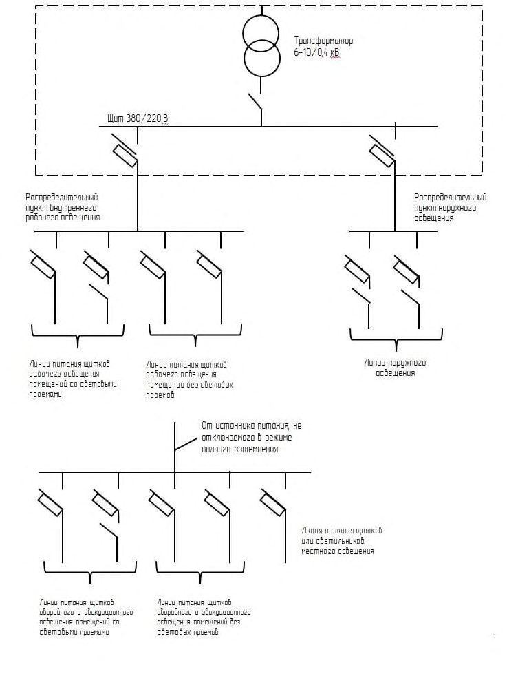

СП 264.1325800.2016 «Световая маскировка населенных пунктов и об»
О документе: разработчики, утверждение, регистрация, ключевые слова
- 1 ИСПОЛНИТЕЛИ -Федеральным бюджетным государственным учреждением «Всероссийский научно-исследовательский институт по проблемам гражданской обороны и чрезвычайных ситуаций МЧС России» (федеральный центр науки и высоких технологий) (ФГБУ ВНИИ ГОЧС (ФЦ))
- 2 ВНЕСЕН Техническим комитетом по стандартизации ТК 465 «Строительство»
- 3 ПОДГОТОВЛЕН к утверждению Департаментом градостроительной деятельности и архитектуры Министерства строительства и жилищно-коммунального хозяйства Российской Федерации (Минстрой России)
- 4 УТВЕРЖДЕН приказом Министерства строительства и жилищно-коммунального хозяйства Российской Федерации от 3 декабря 2016 г. № 880/пр и введен в действие с 4 июня 2017 г.
- 5 ЗАРЕГИСТРИРОВАН Федеральным агентством по техническому регулированию и метрологии (Росстандарт)
- В случае пересмотра ( замены ) или отмены настоящего свода правил соответствующее уведомление будет опубликовано в установленном порядке. Соответствующая информация , уведомление и тексты размещаются также в информационной системе общего пользования - на официальном сайте разработчика ( Минстрой России ) в сети Интернет
© Минстрой России, 2016
Настоящий нормативный документ не может быть полностью или частично воспроизведен, тиражирован и распространен в качестве официального издания на территории Российской Федерации без разрешения Минстроя России
- 8 Требования, предъявляемые к «пассивным» средствам маскировки объектов организаций и территорий ....................................................................................................................................
- 8.1 Маскировка «пассивными» средствами защиты объекта ..............................................................
8.2.Требования, предъявляемые к «пассивным» средствам защиты ..................................................
- 8.2.1 Средства маскировочного окрашивания
......................................................................................
- 8.2.2 Материалы, экранирующие излучение радиолокационной станции
........................................
- 8.2.3 Светомаскировочные устройства
.................................................................................................
- 8.2.4 Пиротехнические средства
............................................................................................................
- 8.2.5 Маскировочные табельные комплекты
........................................................................................
- 8.2.6 Пневматические и каркасные макеты оборудования и сооружений
.........................................
- 8.2.7 Системы постановки дымовых и аэрозольных завес
..................................................................
- 8.2.8 Пенообразующие материалы и оборудование
.............................................................................
- 8.2.9 Термопоглощающее, термозадерживающее, термоохлаждающее оборудование и средства
- 9 Требования, предъявляемые к проектируемым объектам, по снижению их демаскирующих параметров ....................................................................................................................................
- 9.1.Снижение радиолокационной заметности объекта ........................................................................
- 9.2 Снижение оптической заметности объекта ....................................................................................
- 9.3 Снижение теплового излучения .......................................................................................................
- 9.4 Снижение значений параметров излучений объекта во всех диапазонах длин волн (ДВ, СВ, КВ и УКВ) ................................................................................................................................................
- 9.5 Снижение значений ударных, гравитационных и вибрационных параметров оборудования
объекта......................................................................................................................................................
- 10 Контроль качества световой и других видов маскировки на объектах организаций и территориях ..................................................................................................................................
- 10.1 Контроль качества световой маскировки ......................................................................................
- 10.2 Контроль качества комплексной маскировки территорий и объектов ....................................
Приложение А (обязательное) Нормированные показатели освещенности участков ведения работ при маскировке ...................................................................................................................
Приложение Б (справочное) Осветительные приборы для наружного маскировочного освещения и маскировочные приспособления к ним ....................................................................
Приложение В (справочное) Специальные осветительные приборы для маскировочного освещения .....................................................................................................................................
Приложение Г (справочное) Переходные патроны .....................................................................
Приложение Д (справочное) Шкафы пунктов питания сетей наружного освещения ..................
Приложение Е (справочное) Осветительные приборы для общего внутреннего маскировочного освещения и маскировочные приспособления к ним ..........................................
Приложение Ж (справочное) Типовая схема электропитания рабочего, аварийного и эвакуационного освещения ...........................................................................................................
Приложение И (справочное) Устройства для световой маскировки проемов зданий и сооружений ...................................................................................................................................
Приложение К (справочное) Используемые материалы для световой маскировки проемов зданий ...........................................................................................................................................
Приложение Л (обязательное) Световые знаки, применяемые в режимах частичного затемнения и ложного осветления.................................................................................................
Приложение М (рекомендуемое) Основные технические характеристики светотехнических приборов, применяемых для контроля средств светомаскировки .................................................
Приложение Н (обязательное) Методика измерения уровней освещенности, создаваемой осветительными приборами внутреннего и наружного освещения и производственными огнями
Приложение П (справочное) Сведения о параметрах вероятного воздействия противника на объекты экономики инфраструктуры и планировании мероприятий по их маскировке ………..... Библиография ...............................................................................................................................
Дата введения - 2017-06-04
УДК 614.88
ОКС 13.200
Ключевые слова: гражданская оборона; объект, отнесенный к категории по гражданской обороне; ориентирный указатель на территории, маскировка
ИСПОЛНИТЕЛЬ
| АО «ЦНИИПромзданий» | |
|---|---|
| Руководитель разработки Генеральный директор | В.В. Гранев |
| Исполнитель Заместитель генерального директора | Д.К. Лейкина |
| СОИСПОЛНИТЕЛЬ | |
| ФГБУВНИИГОЧС(ФЦ) | |
| Руководитель организации-разработчика Заместитель начальника | И.В. Сосунов |
| Руководитель разработки Начальник 2 научно-исследовательского центра | Н.Н. Посохов |
| Исполнители Начальник | |
| 1 научно-исследовательского центра | В.П. Сломянский |
| Ведущий научный сотрудник 1 научно- исследовательского центра | И.В. Курличенко |
| Ведущий научный сотрудник 1 научно- исследовательского центра | В.Ю. Глебов |
| Начальник отдела 1 научно- исследовательского центра | Д.В. Степаненко |
| Старший научный сотрудник отдела 1 научно-исследовательского центра | М.С. Близнюк |
Введение
Настоящий свод правил разработан с учетом требований Федерального закона от 23 декабря 2004 г. № 190-ФЗ «Градостроительный кодекс Российской Федерации», Федерального закона от 27 декабря 2002 г. № 184-ФЗ «О техническом регулировании», Федерального закона от 12 февраля 1998 г. № 28-ФЗ «О гражданской обороне», Федеральный закон от 30 декабря 2009 г. № 384-ФЗ «Технический регламент о безопасности зданий и сооружений», СП 165.1325800.2014 «СНиП 2.01.51-90 Инженерно-технические мероприятия по гражданской обороне», СП 42.13330.2011 «СНиП 2.07.01-89* Градостроительство. Планировка и застройка городских и сельских поселений».
Актуализация выполнена авторским коллективом ФГБУ ВНИИ ГОЧС (ФЦ): канд. техн. наук И.В. Сосунов (руководитель работ), канд. техн. наук В.П. Сломянский , канд. техн. наук И.В. Курличенко ; канд. техн. наук В.Ю. Глебов ; Н.Н. Посохов ; Д.В. Степаненко , М.С. Близнюк .
1Область применения
2Нормативные ссылки
В настоящем своде правил использованы нормативные ссылки на следующие документы:
ГОСТ Р 42.0.01-2000 Гражданская оборона. Основные положения
ГОСТ Р 42.0.02-2001 Гражданская оборона. Термины и определения основных понятий
ГОСТ Р 55201-2012 «Безопасность в чрезвычайных ситуациях. Порядок разработки перечня мероприятий по гражданской обороне, мероприятий по предупреждению чрезвычайных ситуаций природного и техногенного характера при проектировании объектов капитального строительства
СП 42.13330.2011 «СНиП 2.07.01-89* Градостроительство. Планировка и застройка городских и сельских поселений»
СП 165.1325800.2014 «СНиП 2.01.51-90 Инженерно-технические мероприятия по гражданской обороне»
\_\_\_\_\_\_\_\_\_\_\_\_\_\_\_\_\_\_\_\_\_\_\_\_\_\_\_\_\_\_\_\_\_\_\_\_\_\_\_\_\_\_\_\_\_\_\_\_\_\_\_\_\_\_\_\_\_\_\_\_\_\_\_\_\_\_\_\_\_\_\_\_\_\_\_\_\_\_\_\_\_\_\_\_\_\_\_\_\_\_
Light masking settlements and objects of national economy
Примечание - При пользовании настоящим сводом правил целесообразно проверить действие ссылочных документов в информационной системе общего пользования - на официальном сайте федерального органа исполнительной власти в сфере стандартизации в сети Интернет или по ежегодному информационному указателю «Национальные стандарты», который опубликован по состоянию на 1 января текущего года, и по выпускам ежемесячного информационного указателя «Национальные стандарты» за текущий год. Если заменен ссылочный документ, на который дана недатированная ссылка, то рекомендуется использовать действующую версию этого документа с учетом всех внесенных в данную версию изменений. Если заменен ссылочный документ, на который дана датированная ссылка, то рекомендуется использовать версию этого документа с указанным выше годом утверждения (принятия). Если после утверждения настоящего свода правил в ссылочный документ, на который дана датированная ссылка, внесено изменение, затрагивающее положение на которое дана ссылка, то это положение рекомендуется применять без учета данного изменения. Если ссылочный документ отменен без замены, то положение, в котором дана ссылка на него, рекомендуется применять в части, не затрагивающей эту ссылку. Сведения о действии сводов правил целесообразно проверить в Федеральном информационном фонде стандартов.
3Термины, определения и сокращения
- 3.1.1 «активные» средства маскировки
- Системы и средства управления средствами маскировки, противодействия обнаружению объекта и целеуказанию, «активные» средства постановки помех и радиоэлектронной борьбы, размещенные на объекте (рядом с ним, на оборудованных ложных объектах), за исключением систем и средств радиоэлектронной борьбы, обнаружения средств воздействия и систем целеуказания, размещенные подразделениями Вооруженных Сил Министерства обороны Российской Федерации на территориях вблизи населенных пунктов и объектов организаций.
- 3.1.2 аэрозольные и пенообразующие средства маскировки
- Аэрозольные средства создают маскирующие образования в виде аэрозольных завес в воздухе, пенообразующие - в виде покрытий из жидкой и твердеющей пены на поверхности объектов или окружающем фоне местности. Примечание - Применяются для скрытия от визуально-оптических и оптико-электронных (телевизионных, инфракрасных и лазерных) средств разведки и наведения оружия.
- 3.1.3 высокоточное оружие
- Управляемое оружие, способное поражать цели назначенным нарядом средств поражения на любой дальности в пределах его досягаемости.
- 3.1.4 дымовые средства маскировки
- Применяются для «ослепления» средств обнаружения противника, при проведении мероприятий гражданской обороны и маскировки объектов и территорий, а также для обозначения хозяйственной деятельности на ложных объектах.
- 3.1.5 демаскирующие признаки объекта
- Многомерная характеристика объекта и прилегающей к нему территории, которая раскрывает сведения об этом объекте и может быть выявлена средствами разведки иностранного государства.
- 3.1.6 дипольные отражатели
- Тонкие пассивные вибраторы из металлизированной бумаги, стекло- и нейлонового волокна, алюминиевой фольги, длина которых кратна половине длины волны излучения радиолокационной станции противника. Примечание - Применяются для создания пассивных помех радиолокационной станции противника при маскировке воздушных, морских и наземных объектов.
- 3.1.7 искусственная маска объекта
- Конструкция в виде каркаса из металлических или других элементов с уложенным на них маскировочным покрытием, предназначенная для скрытия как подвижных, так и неподвижных объектов от наблюдения противника.
- 3.1.8 имитаторы физических полей общего назначения
- Совокупность приборов и технических средств, обеспечивающих создание сходных «образов» физических полей маскируемого объекта (радиолокационные, тепловые и звуковые имитаторы, отражатели лазерного излучения, имитаторы фоновых образований и другое оборудование).
- 3.1.9 комплексная маскировка объекта (территории)
- Совокупность проводимых организационных, инженерно-технических и иных мероприятий, направленных на достижение минимальных показателей демаскирующих параметров объекта и ориентирных указателей на территории, обеспечивающих снижение вероятности обнаружения и поражения цели (целей).
- 3.1.10 маскировка
- Один из видов защиты территорий и объектов организаций, отнесенных к группам (категориям) по гражданской обороне, реализуемых при выполнении мероприятий гражданской обороны.
- 3.1.11 маскировочные средства
- Изделия промышленного изготовления, применяемые для маскировки.
- 3.1.12 маскировочное освещение
- Наружное и внутреннее, общее или местное, не отключаемое в режиме ложного освещения.
- 3.1.13 механический способ световой маскировки
- Меры закрытия светящихся элементов объектов светонепроницаемыми материалами или конструкциями.
- 3.1.14 малозаметность
- Комплекс методов и средств маскировки объектов посредством специально разработанных радиопоглощающих материалов и конструкций (систем), позволяющих уменьшать отражение электромагнитных волн.
- 3.1.15 «маска»
- Инженерные конструкции или местные предметы, применяемые для скрытия от разведки противника сооружений и оборудования объектов или изменения их внешнего вида.
- 3.1.16 маскировочное окрашивание сооружений объекта
- Прием маскировки, применяемый для: уменьшения заметности объекта; искажения внешнего вида объекта; слияния «маски» объекта по цвету и рисунку с фоном местности.
- 3.1.17 маскирующая обработка местности
- Комплекс мероприятий по снижению вероятности привязки оптических и электронных систем разведки и обнаружения к ее характерным ориентирам с помощью средств маскировки.
- 3.1.18 маскирующие формы сооружений объекта
- Придание свойств сооружениям объекта, позволяющих снизить демаскирующие признаки объекта до уровня окружающего его фона.
- 3.1.19 оптическая локация
- Совокупность методов обнаружения, измерения координат, а также распознавания формы удаленных объектов с помощью электромагнитных волн оптического диапазона (от ультрафиолетовых до дальних инфракрасных). 3.1.20 СП 264.1325800.2016 3.1.21
- территория, отнесенная к группе по гражданской обороне
- Территория, на которой расположен город или иной населенный пункт, имеющий важное оборонное и экономическое значение, с находящимися в нем объектами, представляющий высокую степень опасности возникновения чрезвычайных ситуаций в военное и мирное время.
- 3.1.22 « пассивные» средства маскировки
- Средства, позволяющие снизить демаскирующие признаки объекта без применения технических средств, позволяющих улавливать работу систем обнаружения вероятного противника.
- 3.1.23 прямое управление светомаскировкой объекта
- Применение ручных коммутационных аппаратов в линиях осветительной сети (автоматов, рубильников, выключателей и т. п.), устанавливаемых на щитах трансформаторных подстанций и электропомещений, на вводно-распределительных устройствах, ответвлениях от силовых магистралей, магистральных распределительных пунктах, по длине линий питающей осветительной сети, на вводах групповых щитков.
- 3.1.24 производственные огни
- Источники светового излучения, возникающие на предприятиях в процессе их технологической деятельности (например: огни, сопровождающие плавку, розлив и обработку металла; свечение отводимого дыма; огни факелов отходящих газов; огни сварки).
- 3.1.25 радиолокационная станция
- Система для обнаружения воздушных, морских и наземных объектов, а также для определения их дальности и геометрических параметров.
- 3.1.26 радиоэлектронная борьба
- Совокупность мероприятий для получения сведений о параметрах режима работы и местонахождении радиоэлектронных средств противника, затруднения или нарушения их работы, а также защиты своих радиоэлектронных средств от средств разведки и противодействия противника.
- 3.1.27 режим частичного затемнения
- Условия освещения населенных пунктов и объектов организаций, при которых обесточивается освещение основных магистралей, улиц, дорог, а также критических элементов объектов организаций; предусматривается комплекс мероприятий по поддержанию дежурного и аварийного освещения участков производства работ вне зданий, проходов, проездов и территорий объектов.
- 3.1.28 световая маскировка
- Комплекс мероприятий, направленных на скрытие или имитацию световых демаскирующих признаков объектов и населенных пунктов.
- 3.1.29 системы обнаружения объектов
- Системы разведки и целеуказания вероятного противника, предназначенные для поиска и идентификации целей, а также размещенные комплексы поиска и целеуказания на современных средствах доставки и поражения целей вероятного противника.
- 3.1.30 система централизованного управления наружным освещением
- Автоматизированная система, предназначенная (или обеспечивающая) для отключения систем и оборудования (в том числе и осветительных приборов наружного освещения территорий и объектов) на основе заложенного алгоритма по их безаварийному выведению из работы и включению.
- 3.1.31 тепловые имитаторы (тепловые ловушки)
- Специальные устройства и оборудование для выработки теплового излучения, имитирующего тепловое излучение реальных объектов.
- 3.1.32 технологический способ световой маскировки
- Мероприятия, в результате которых световое излучение не возникает или снижается на объекте до уровней, позволяющих осуществлять его световую маскировку механическим способом.
- 3.1.33 упругие колебания объекта
- Продольные (инфразвуковые, звуковые, ультразвуковые) волны с частотой колебаний от 20 Гц и до 20 кГц, характерные для турбин, кузнечного и прессового оборудования, а также аналогичных установок объектов машиностроительной промышленности, военно-промышленного и топливноэнергетического комплекса, при работе которых возникает вибрация.
- 3.1.34 уголковый отражатель
- Жестко связанные между собой, взаимно перпендикулярные плоскости различной формы (прямоугольной, треугольной, секторной и др.), из проводящего материала, отражающие электромагнитное излучение в направлении средств разведки противника для создания радиоэлектронных помех радиолокационных станций и имитации различной техники и сооружений.
- 3.1.35 централизованное дистанционное управление элементами световой маскировки
- Система управления с применением прокладываемых проводов управления и электромагнитных устройств, позволяющая производить включение или отключение осветительной сети из одного места.
- 3.1.36 централизованное телемеханическое управление элементами световой маскировки
- Система управления с применением устройств телемеханики, позволяющая производить одновременное включение или отключение осветительной сети из одного места.
- 3.1.37 электрический способ световой маскировки
- Централизованное отключение электроосвещения всего объекта или его части.
- 3.1.38 эффективная площадь рассеивания; ЭПР
- Площадь некоторой фиктивной поверхности, м² , - идеальный изотропный отражатель, который, будучи помещенным в точку расположения цели нормально, по направлению облучения, создает в точке расположения радиолокационной станции ту же плотность потока мощности, что и реальная цель; ЭПР конкретного объекта зависит от его формы, размеров, материала, из которого он изготовлен, а также от его ориентации по отношению к приемнику и передатчику. 3.2 В настоящем своде правил применены следующие сокращения:
4Общие положения
При расположении объекта:
- в черте города (населенного пункта) - маскировка осуществляется под здания и сооружения, характерные для жилых кварталов города (населенного пункта);
- в черте лесистой местности - маскировка осуществляется под растительный фон, характерный для конкретного периода года (холодного, переходного, теплого);
- в горной местности и на открытом участке местности -маскировка осуществляется под сложный рельеф местности или фон окружающей местности и местные предметы.
5Требования к проектированию мероприятий по комплексной и другим видам маскировки территорий и объектов
5.1Проектирование мероприятий световой маскировки территорий населенных пунктов и объектов организаций
Проектирование мероприятий световой маскировки населенных пунктов и объектов организаций осуществляется заблаговременно в мирное время в ходе выполнения ИТМ ГО.
Ведение мероприятий по световой маскировке осуществляется [1]: в полном объеме - при внезапном нападении противника и при выполнении первоочередных мероприятий по ГО третьей очереди; частично - при выполнении первоочередных мероприятий по ГО первой и второй очередей или в условиях локального военного конфликта на части территории страны.
Световую маскировку населенных пунктов и объектов организаций следует осуществлять электрическим, светотехническим, технологическим и механическим способами. Способ или сочетание способов световой маскировки должен выбираться в каждом конкретном случае на основе технико-экономического сравнения разрабатываемых вариантов (по критерию «стоимость-эффективность») и согласовываться со структурными подразделениями органов местного самоуправления, уполномоченных на решение задач в области гражданской обороны, с учетом достижения нормативных показателей освещенности участков ведения работ при маскировке, указанных в приложении А.
Реконструкцию систем электроосвещения и электроснабжения населенных пунктов и объектов организаций, обусловленную мероприятиями световой маскировки, необходимо предусматривать с минимальными затратами. При этом, проектирование реконструкции электрических сетей необходимо выполнять комплексно для всего населенного пункта или объекта организации, разделяя электрические сети на питающие потребителей, продолжающих работу и прекращающих ее в режиме ложного освещения, путем оптимальной группировки подключения зданий и сооружений к электросетям и следует предусматривать максимальное применение существующих электрических сетей.
5.1.1 Маскировка наружного освещения
5.1.1.1 При введении режима частичного затемнения освещение территорий стадионов и выставок, установки для архитектурной подсветки, осветительные приборы рекламного и витринного освещения должны отключаться от источников питания или электрических сетей. При этом должна быть исключена возможность их местного включения. Одновременно следует предусматривать снижение уровней наружного освещения городских и поселковых улиц, дорог, площадей, территорий парков, бульваров, детских, школьных, лечебно-оздоровительных учреждений и других объектов с нормируемыми значениями в обычном режиме средней яркости 0,4 кд/м² или средней освещенности 4 лк и более путем выключения до половины осветительных приборов. При этом не допускается отключение двух рядом расположенных осветительных приборов.
5.1.1.2 Снижение освещенности улиц и дорог с нормируемыми значениями средней яркости 0,2 кд/м² или средней освещенности 2 лк и менее, пешеходных дорог, мостов и аллей, стоянок автомобилей и внутренних служебно-хозяйственных и пожарных проездов, а также улиц и дорог сельских населенных пунктов в режиме частичного затемнения предусматривать не следует.
5.1.1.3 Наружные осветительные приборы, устанавливаемые над входами (въездами) в здания и сооружения, габаритные огни светового ограждения высотных сооружений в режиме частичного затемнения, как правило, отключаться не должны.
5.1.1.4 В режиме частичного затемнения освещенность мест производства работ вне зданий, проходов, проездов и территорий предприятий рекомендуется снижать путем выключения части осветительных приборов, установки ламп пониженной мощности или применения регуляторов напряжения.
5.1.1.5 В режиме ложного освещения все наружное освещение населенных пунктов и организаций, не задействованное на организацию мероприятий ложного освещения, должно быть выключено. В местах проведения неотложных производственных, аварийно-спасательных и других неотложных работ, а также на опасных участках путей эвакуации людей к защитным сооружениям и у входов в них следует предусматривать маскировочное стационарное или автономное освещение с помощью переносных осветительных фонарей. При расчете установок (систем) маскировочного освещения коэффициент запаса материалов и оборудования следует принимать равным 1 (от фактической потребности).
5.1.1.6 Применяемые в режиме ложного освещения осветительные приборы стационарного наружного маскировочного освещения должны удовлетворять следующим требованиям:
- а) весь световой поток осветительных приборов должен быть направлен в нижнюю полусферу;
- б) создаваемая светильниками освещенность поверхностей не должна превышать 0,2 лк;
- в) осветительные приборы должны иметь защитный угол не менее 15° и жесткое крепление, исключающее возможность изменения их положения под воздействием ветра со скоростью до 40 м/с;
- г) осветительные приборы следует размещать так, чтобы их световой поток не падал на стены строений и другие вертикальные поверхности, их установка вблизи поверхностей с зеркальным характером отражения не допускается.
5.1.1.7 В тех местах, где постоянное маскировочное освещение не предусмотрено, допускается применение переносных осветительных фонарей, создающих освещенность, не превышающую 2 лк, при размерах светового пятна на расстоянии 1 м от освещаемой поверхности не более 1 м² , и удовлетворяющих требованиям 5.1.1.6, перечисления а) и г), а также применение специальных переносных осветительных приборов.
- 5.1.1.8 Снижение освещенности в режиме ложного освещения до требуемых уровней достигается следующими методами или их сочетанием:
- а) установкой ламп пониженной мощности;
- б) заменой газоразрядных ламп высокого давления лампами накаливания и отключением зажигающих устройств;
- в) установкой осветительных приборов и маскировочных приспособлений к ним, приведенных в приложении Б;
- г) заменой защитных колпаков, рассеивателей и преломителей света осветительных приборов маскировочными приспособлениями;
- д) установкой специальных осветительных приборов, приведенных в приложении В;
- е) применением регуляторов напряжения для осветительных приборов.
5.1.1.9 Для маскировочного освещения рекомендуется применять лампы накаливания, рассчитанные на напряжение 230-240В. Применение газоразрядных ламп для маскировочного освещения не допускается.
В осветительных приборах, предназначенных для ламп с цоколем Е40, лампы накаливания с цоколем Е27 устанавливаются с помощью переходных патронов, приведенных в приложении Г.
5.1.1.10 В населенных пунктах и организациях, продолжающих функционировать в военное время, для доведения информации об объектах, обозначения въездов на территории, углов зданий, выходов и ориентиров для проходов, габаритов транспортных средств в режиме ложного освещения следует применять световые знаки и дополнительно белые или светящиеся краски, световозвращающие или рассеивающие свет покрытия, указанные в приложении Л.
5.1.2 Управление наружным освещением населенных пунктов
5.1.2.1 Управление наружным освещением населенных пунктов следует предусматривать централизованным -телемеханическим или дистанционным способом, с применением автоматизированных систем, разработанных на отечественной элементной базе.
Установки наружного освещения населенных пунктов должны включаться и отключаться из пунктов управления освещением с помощью средств, приведенных в приложении Д.
5.1.2.2 В режиме частичного затемнения вечерние фазы питания установок наружного освещения, управляемых централизованно, отключаются с помощью средств управления, после чего на этих фазах должны сниматься предохранители и отключаться катушки автоматов. На вечерних фазах питания установок наружного освещения, управляемых децентрализованно фотоэлементами или программными реле времени, отключаются катушки автоматов и снимаются предохранители.
5.1.2.3 Центральный диспетчерский пункт управления освещением, а при его отсутствии - диспетчерский пункт наружного освещения, должен быть обеспечен прямой телефонной связью со структурными подразделениями органов местного самоуправления, уполномоченными на решение задач в области гражданской обороны, и районными диспетчерскими пунктами.
В качестве дублирующей связи следует предусматривать УКВ радиосвязь.
5.1.3 Управление наружным освещением территорий объектов организаций
- 5.1.3.1 Управление наружным освещением территорий объектов организаций должно быть централизованным.
Централизация управления наружным освещением должна предусматривать: возможность применения автоматизированных систем на отечественной элементной базе; возможность отключения осветительных приборов (наружного освещения) на территории объекта, подлежащего маскировке, следующими методами - прямым, дистанционным, телемеханическим; исключение возможности несанкционированного включения освещения средствами программного обеспечения и автоматики, обеспечивающими его управление.
Способ централизованного управления должен выбираться с учетом местных условий, особенностей объекта организации и его осветительных установок.
Все установки наружного освещения должны включаться и отключаться из одного пункта централизованного управления с помощью средств, приведенных в приложении Д. С введением режима затемнения в пункте управления освещением должно быть установлено дежурство в темное время суток.
5.1.3.2 На площадных и групповых объектах организаций, протяженность территорий которых или расстояние между которыми составляет несколько километров, допускается устройство одного главного и нескольких дополнительных пунктов централизованного управления освещением отдельных участков. Главный пункт должен быть обеспечен прямой телефонной связью с пунктом управления организации и указанными дополнительными пунктами.
5.1.3.3 Управление наружным освещением открытых технологических установок, складов, эстакад, мостов и т. п., а также управление огнями светового ограждения территории и высотных сооружений (дымовых труб, мачт и т. д.) следует осуществлять из пунктов централизованного управления освещением зданий и сооружений, к которым они относятся, или предусматривать местное управление, применяя для этого коммутационные аппараты (автоматы, рубильники, выключатели). С введением режима затемнения в указанных пунктах должен постоянно находиться дежурный.
5.1.3.4 Осветительные приборы, устанавливаемые у входов и въездов в здания и питаемые от сетей внутреннего освещения, допускается не включать в систему централизованного управления наружным освещением при условии, что при введении режима ложного освещения они будут отключены дежурным персоналом.
5.1.3.5 Систему централизованного управления наружным освещением градообразующих предприятий рекомендуется интегрировать в систему централизованного управления наружным освещением близлежащих населенных пунктов.
5.1.3.6 В пунктах централизованного управления наружным освещением должна предусматриваться сигнализация о состоянии наружного освещения - «Включено» или «Отключено».
5.1.3.7 При проектировании наружного маскировочного освещения следует предусматривать управление осветительными приборами из пункта управления наружным освещением; допускается применение управления электроосвещением из мест с постоянным дежурным персоналом. Установки наружного маскировочного освещения следует питать от электрических сетей ближайших зданий и сооружений, не отключаемых по сигналу «Внимание всем!» с информацией о ВТ.
5.1.4 Маскировка внутреннего освещения
5.1.4.1 В режиме частичного затемнения освещенность в жилых, общественных, производственных и вспомогательных зданиях рекомендуется снижать путем выключения части осветительных приборов, установки ламп пониженной мощности или применения регуляторов напряжения.
5.1.4.2 В режиме ложного освещения в жилых зданиях (независимо от пребывания людей), а также в помещениях общественных, производственных и вспомогательных зданий, в которых не предусмотрено пребывание людей в темное время суток или прекращается работа по сигналу ВТ, осуществляется полное отключение источников освещения.
5.1.4.3 Световая маскировка зданий или помещений, в которых продолжается работа при подаче сигнала ВТ или по условиям производства невозможно безаварийное отключение освещения, осуществляется светотехническим или механическим способом. К числу таких объектов, например, относятся:
- а) операционные блоки больниц и госпиталей, родильные отделения, помещения анестезиологии, реанимации и интенсивной терапии, кабинеты лапароскопии и бронхоскопии, станции переливания крови;
- б) узлы связи сотовых операторов, телеграфные станции и узлы, сетевые узлы и узлы автоматической коммутации, обслуживаемые усилительные пункты, районные узлы связи, АТС;
- в) центральные усилительные станции, радиотрансляционные узлы, передающие и приемные радиоцентры (радиостанции), радиотелевизионные передающие станции и наземные станции космической связи;
- г) котельные с водогрейными котлами единичной производительности более 10 Гкал/ч и теплофикационные насосные станции;
- д) водопроводные насосные станции в городах с числом жителей более 50 тыс., а также водоподъемные сооружения артезианских скважин;
- е) канализационные насосные станции, без аварийного выпуска или с аварийным выпуском, при согласованной продолжительности сброса менее 2 ч, очистные сооружения общегородского назначения;
- ж) диспетчерские пункты энергосистем, городских электросетей, сетей наружного освещения, теплоснабжения, водоканализационных и газовых сетей, охранной сигнализации; сооружения органов управления гражданской обороной.
Перечень указанных объектов в каждом конкретном случае должен уточняться и утверждаться органами исполнительной власти субъектов Российской Федерации по согласованию с территориальными органами МЧС России.
- 5.1.4.4 Установки общего маскировочного освещения, работающие в режиме ложного освещения, должны удовлетворять следующим светотехническим требованиям:
- а) весь световой поток осветительных приборов должен быть направлен в нижнюю полусферу;
- б) защитный угол осветительных приборов должен составлять не менее 30°;
- в) попадание прямого светового потока на световые проемы и стены должно быть исключено;
- г) освещенность на поверхностях, просматриваемых через световые проемы из верхней полусферы, должна быть не более 0,5 лк.
- 5.1.4.5 Местное маскировочное освещение предусматривается в тех случаях, когда продолжение работы при общем маскировочном освещении невозможно.
Установки местного внутреннего маскировочного освещения, работающие в режиме ложного освещения, кроме требований, указанных в 5.1.4.4, перечисления а), б), в), должны удовлетворять следующим дополнительным требованиям: освещенность на поверхностях в пределах светового пятна, просматриваемого через световые проемы из верхней полусферы, должна быть не более 5 лк; площадь светового пятна, создаваемого осветительным прибором на расстоянии 2 м, не должна превышать 1 м² .
- 5.1.4.6 Допускается освещенность производственных и общественных зданий или отдельных помещений, в которых для продолжения работы в режиме ложного освещения требуются ее уровни, превышающие указанные в 5.1.4.4 и 5.1.4.5, или есть производственные огни, следует применять механический способ маскировки -закрытие световых и аэрационных проемов и устройство тамбуров во входах (въездах).
- 5.1.4.7 В режиме ложного освещения снижение освещенности от общего и местного освещения до уровней, указанных в 5.1.4.4 и 5.1.4.5, осуществляется в соответствии с 5.1.1.8, перечисления а), б), г), а также применением осветительных приборов и приспособлений к ним (приложение Е).
- 5.1.4.8 Для создания маскировочного освещения рекомендуется применять системы рабочего, аварийного или эвакуационного освещения, электропитание которых осуществляется согласно приложению Ж.
- 5.1.4.9 В проектах электрического освещения зданий и помещений должны быть обозначены рабочие места, на которых необходима установка осветительных приборов местного маскировочного освещения для продолжения работы в режиме ложного освещения.
5.1.5 Управление внутренним освещением
- 5.1.5.1 Электрическое рабочее освещение зданий или отдельных помещений, указанных в 5.1.4.2, а также тех зданий и помещений, где продолжается работа при включении маскировочного освещения, должно отключаться от источников питания или электрических сетей централизованно из возможно меньшего числа мест: дежурным персоналом: на ТП и РП, эксплуатируемых постоянным дежурным персоналом; на автономных центрах питания; диспетчером с помощью устройств телемеханики: на ТП и РП, эксплуатируемых без постоянного дежурного персонала.
- 5.1.5.2 Не предусматривается централизованное управление осветительными приборами местного освещения, установленными на постоянно обслуживаемом оборудовании. Отключение таких осветительных приборов по сигналу ВТ должно производиться специально проинструктированными лицами.
Осветительные приборы местного освещения, установленные на оборудовании, у которого персонал находится временно, должны включаться в систему централизованного управления общим освещением.
- 5.1.5.3 При использовании системы автоматического управления общего освещения должна быть предусмотрена возможность отключения освещения персоналом из помещения, в котором постоянно находится дежурный по объекту, и исключена возможность включения освещения средствами автоматики.
- 5.1.5.4 При использовании систем автоматического управления общим освещением зданий, указанных в 5.1.4.2 и 5.1.5.1, пункты централизованного управления общим освещением должны быть оборудованы сигнализацией, информирующей о состоянии освещения, - «Включено» или «Отключено».
- 5.1.5.5 Из пунктов централизованного управления внутренним освещением зданий или сооружений допускается осуществлять управление освещением наружных осветительных установок, относящихся к данному зданию или сооружению. При введении режима затемнения наличие дежурного персонала на таких пунктах управления обязательно.
5.1.6 Устройства для световой маскировки проемов зданий и сооружений
- 5.1.6.1 Для световой маскировки окон, а также светоаэрационных и аэрационных фонарей применяются: раздвижные и подъемные шторы из полимерных материалов, а также из светонепроницаемой бумаги; щиты, ставни и экраны из рулонных и листовых материалов.
5.1.6.2 Перечень отдельных устройств для световой маскировки проемов приведен в приложении И.
Для изготовления светомаскировочных устройств проемов следует применять материалы, перечень которых приведен в приложении К.
5.1.6.3 Устройства для световой маскировки окон должны удовлетворять следующим требованиям: закрывающие устройства должны перекрывать оконные проемы и выступать за пределы проема не менее чем на 0,15 м с каждой стороны; для штор должны быть предусмотрены вертикальные направляющие; при витражном и ленточном остеклении дополнительно должны устанавливаться стойки - направляющие; ширина штор не должна превышать 6 м.
В случаях, когда шторы расположены встык или между ними есть зазор, должны предусматриваться нащельники шириной не менее 0,4 м.
5.1.6.4 Раздвижные шторы следует применять в производственных и других зданиях при высоте оконного проема не более 4 м.
Подъемные шторы следует применять в одноэтажных производственных зданиях и сооружениях при высоте оконного проема 4 - 8 м. При более высоких оконных проемах верхнюю часть проема, превышающего 8 м, следует заделывать наглухо светонепроницаемым материалом или покрытием, наносимым на остекление (пленки, краски), если это допускается условиями технологии производства.
5.1.6.5 Для обеспечения световой маскировки окон, на которых невозможна установка штор (например, из-за ветровых связей между колоннами) и фонарей, их остекление должно быть покрыто светонепроницаемыми красками, согласно приложению К, и пленками, если это допускается условиями технологии производства.
5.1.6.6 Механизмы для приведения в действие светомаскировочных устройств должны быть ручными и могут быть дополнительно оборудованы электромеханическими устройствами, приводимыми в действие от автономных источников питания, с элементами их подзарядки от основных систем электропитания, при этом прикладываемое усилие не должно превышать 147 Н (15 кгс) на одного человека.
5.1.6.7 В производственных зданиях и сооружениях для световой маскировки ворот, применяемых для проезда транспорта, в зависимости от производственных условий следует устраивать тамбуры внутри или снаружи здания (сооружения).
Конструкция тамбура должна быть легкой, сборно-разборной, из несгораемых или трудносгораемых материалов.
Параметры тамбура обусловливаются наибольшими размерами применяемого транспортного средства, обеспечивающего ведение технологического процесса.
5.1.7 Световая маскировка производственных огней
5.1.7.1 В режиме частичного затемнения производственные огни световой маскировке не подлежат, за исключением производственных огней, световая маскировка которых не может быть произведена за время перехода на режим ложного освещения.
5.1.7.2 Маскировка производственных огней промышленных предприятий в режиме ложного освещения должна производиться технологическим и механическим способами или их сочетанием.
Способы и средства световой маскировки определяются в каждом конкретном случае в соответствии с требованиями ведомственных инструкций по световой маскировке и безаварийной остановке производства, утверждаемых в установленном порядке.
- 5.1.7.3 Световая маскировка производственных огней осуществляется: выключением или переводом технологических агрегатов на поддерживающий режим работы; изменением технологического режима работы оборудования; применением прогрессивных технологических установок для утилизации тепла и отходящих газов, в том числе применением котлов-утилизаторов, рекуператоров, плотных водоохлаждаемых напыльников на конвертерах и анодных печей, установок для дожига отходящих газов; местным экранированием светового излучения, в том числе: уплотнением форсуночных отверстий, приэлектродных пространств, неплотностей в сводах печей; укрытием поверхностей расплавов инертными материалами; установкой крышек на ковши, чаши, миксеры, горловины печей и конвертеров; применением специальных зонтов и металлических ширм.
- 5.1.7.4 Световые излучения в производственных зданиях или отдельных помещениях при необходимости маскируются: экранированием световых, светоаэрационных и аэрационных проемов различными светомаскировочными устройствами; оборудованием вытяжных фонарей для удаления из горячих цехов различных газовых выделений глубокими и непрозрачными жалюзи; устройством тамбуров или затемнения участков въезда в цеха.
- 5.1.7.5 В режиме ложного освещения электродуговая, а также газовая сварка и резка металла, как правило, прекращаются. При необходимости выполнения этих операций, их следует осуществлять в закрытых помещениях или специальных кабинах, изготовленных из светонепроницаемого материала.
- 5.1.7.6 В режиме ложного освещения работа котлов, находящихся под нагрузкой, ведется по специальной ведомственной инструкции, а растопка котлов производиться не должна.
5.1.8 Маскировка световых знаков
- 5.1.8.1 В режиме частичного затемнения световые знаки мирного времени (дорожно-транспортные, промышленных предприятий, различные световые указатели и т. п.) маскировке не подлежат. Электропитание указанных знаков должно входить в системы централизованного управления наружным и внутренним освещением. В режиме ложного освещения световые знаки мирного времени выключаются.
- 5.1.8.2 В режиме световой маскировки на территориях городов, населенных пунктов, промышленных предприятий, в общественных и производственных зданиях применяются специальные световые знаки для обозначения входов, выходов, путей эвакуации людей, объектов и размещения сил гражданской обороны, медицинских пунктов, мест размещения средств пожаротушения, запрещения прохода и др.
Перечень световых знаков, их вид и начертание символики приведены в приложении Л.
Наряду с символами допускается применение световых знаков в виде надписей.
- 5.1.8.3 В режиме ложного освещения следует применять световые знаки, удовлетворяющие следующим требованиям:
- а) размеры и яркость световых знаков, устанавливаемых снаружи должны обеспечивать их видимость на фоне яркостью до 0,05 кд/м² , с расстояния 25 - 30 м. Символика знака, при той же яркости фона, должна различаться с расстояния не менее 10 м. Освещенность в зоне их расположения не должна быть более 0,2 лк;
- б) размеры и яркость световых знаков, устанавливаемых внутри зданий должны обеспечивать их видимость на фоне яркостью до 0,1 кд/м² , с расстояния 25 м и различимость символики - с расстояния до 10 м. Освещенность в зоне их расположения не должна быть более 0,5 лк.
- 5.1.8.4 Световые знаки, указанные в 5.1.8.2, должны включаться одновременно с наружным и внутренним маскировочным освещением. Знаки должны присоединяться к сетям наружного и внутреннего освещения, не отключаемым в режиме ложного освещения, или быть с автономным питанием.
5.2Проектирование мероприятий других видов маскировки территорий населенных пунктов и объектов организаций
5.3Проектирование мероприятий по комплексной маскировке территорий и объектов организаций
- 5.3.2. Проектирование мероприятий комплексной маскировки территорий предусматривает: выявление ориентирных указателей на территории и проведение мероприятий по их маскировке и (или) изменению (смещению их размещения) созданием серии ложных объектов с параметрами, приближенными к основным; определение комплекса технических мероприятий по изменению естественных параметров местности и ориентирных указателей для накопления системных ошибок в работе технических систем и комплексов средств разведки вероятного противника, предназначенных для наведения средств поражения на цели или для снижения точности их наведения; разработку технического проекта системы комплексной маскировки территории и автоматизированной системы, обеспечивающей централизованное управление ее элементами (средствами), в том числе с заложенным алгоритмом функционирования «плавающих» ориентирных ложных указателей, допускающих периодическое изменение их положения на местности на расстояние до 1000 м.
5.4Критерии определения территорий, требующих проведения мероприятий по комплексной маскировке
Критериями определения территорий, подлежащих комплексной маскировке, являются: морские территории (при больших площадях морских границ - русла рек, впадающих в моря, ландшафтные участки местности и прилегающие участки заболоченной местности (лиманы); русла рек, водохранилища (и их каскады), озера; равнинные ландшафты местности (расположенные вне крупных городов); ущелья в горной местности (представляющие собой проходы между горными хребтами и вершинами (пиками); наличие значительного числа ориентирных указателей (не менее 2-3 на 1 км² ) на территории, в соответствии с представленными в таблице 1.
Таблица 1 - Основные природные и техногенные ориентиры и их общая характеристика
| Природный ориентир | Общая характеристика природных ориентиров | Техногенный ориентир | Общая характеристика техногенных ориентиров |
|---|---|---|---|
| Река | Ширина не менее 5 м, протяженность более 5 км | Города и населенные пункты | Наличие демаскирующих признаков их размещения на местности |
| Водохранилище | Общая площадь более 2 км² | Отдельно стоящие высотные объекты (ЛЭП, вышки различного назначения) | Высота более 30м, с ЭПР в радиолокационном спектре более 100 м² |
| Озеро | Общая площадь более 0,5 км² | Объекты транспортной инфраструктуры (железнодорожные и автомобильные дороги, мосты, развязки, тоннели и т.д.) | Наличие демаскирующих признаков работы объекта |
| Горная гряда и вершины гор, холмы | Высота свыше 100м относительно общего ландшафта местности | Объекты экономики (ТЭЦ, заводы, фабрики) | Наличие демаскирующих признаков работы объекта |
| Сопки, возвышенности на равнинной местности | Высота более 100 м | ГТС, ГЭС | Наличие демаскирующих признаков работы объекта |
5.5Параметры оценки демаскирующих свойств объекта организации
Демаскирующие признаки объектов организаций определяются с учетом возможностей средств ведения разведки и целеуказания вероятного противника в диапазонах радиоволн -СВ, КВ, УКВ, а также в оптическом, инфракрасном, ультрафиолетовом спектрах излучений.
Основные параметры обнаружения объектов организаций определяются чувствительностью РЛС, теле-, тепловизорных авиационных комплексов, а также ГСН систем наведения крылатых ракет и корректируемых авиабомб. Параметры чувствительности систем целеуказания вероятного противника характеризуются диапазонами настройки ГСН средств поражения по выявлению физических параметров объектов организаций относительно окружающего фона местности.
При проектировании маскировочных мероприятий рекомендуется учитывать сведения, приведенные в таблице 2, о возможностях ГСН средств поражения по идентификации параметров излучений объектов и в приложении П, о видах систем целеуказания ССП вероятного противника на конечной траектории их движения к типовым объектам (целям поражения), исходя из типов применяемых средств доставки и поражения цели, а также удаленности объекта от границы Российской Федерации.
Таблица 2
| Значения параметров ГСН | Значения параметров ГСН | Значения параметров ГСН | Значения параметров ГСН | ||
|---|---|---|---|---|---|
| Тип ГСН | Возможности ГСН | Длина волны | Чувствитель ность | Круговое вероятное отклонение, м | Система наведения |
| Радиолокационна я РГС (РГСН) | Обеспечивает эффективное наведение ракеты при излучении цели (объекта) | 2,5 - 77 см | 10 -9 - 10 -7 Вт | 3 - 5 | Пассивная |
| Тепловизионная ТГС (ИКГСН) | Обеспечивает эффективное наведение ракеты на тепловое (инфракрасное) излучение цели (объекта) | 8-14 мкм | 0,01°С - 0,2 °С | 0,5 - 1,5 | Пассивная |
| Лазерная (ЛГСН) | Обеспечивает эффективное наведение ракеты на цель (объект) при его подсвечивании лазерным лучом | 1-1,6 мкм | 10 -8 - 10 -7 Вт/см² | 1,5 - 3 | Полуактивная |
| Телевизионная (ТВ-ГСН) | Обеспечивает эффективное наведение ракеты по внешнему облучению (подсветке) цели (объекта) | 0,4-0,7 мкм | 10 - 10 4 люкс | 1,5 - 3 | Полуактивная |
Основные способы наведения ВТО на цель: «контрастный» и «корреляционный».
«Контрастный» способ наведения ВТО на объект обеспечивается за счет его выделения на фоне местности или других объектов по оптическому, инфракрасному или радиолокационному контрасту (характерными целями являются объекты типа: доменная печь, передающая станция космической связи, ретрансляторы, пролет железнодорожного моста и т.п.).
«Корреляционный» способ наведения ВТО на объект основан на сравнении (корреляционной обработки) «эталонного» изображения, полученного заранее в ходе предварительной разведки, и текущего, считываемого непосредственно комплексом целеуказания и наведения ВТО в оптическом или радиолокационном диапазонах электромагнитных волн.
5.6Порядок определения демаскирующих признаков и параметров объекта организации
- к «оптическим» демаскирующим характеристикам объекта в «видимом» диапазоне длин волн относятся: конфигурация объекта (внешний вид и размеры); расстояние до характерных географических ориентиров; контраст «объект-фон»; цветовой контраст;
- к «тепловым» демаскирующим характеристикам объекта относятся: наличие дымов или высокая спектральная мощность (плотность потока) излучения в ближнем или дальнем инфракрасном участке спектров излучения электромагнитных волн; температурный контраст элементов объекта и прилегающей территории; конфигурация изображения элемента объекта (тепловой портрет) в ИК участке спектра ЭМИ.
К радиолокационным характеристикам объекта относятся: радиолокационный «контраст»; площадь поверхности рассеяния; удельная площадь поверхности рассеяния; конфигурация радиолокационного изображения объекта или отдельных его элементов (радиолокационное изображение).
Значения ЭМИ объекта -основные показатели идентификации объекта средствами ведения разведки и целеуказания противника.
- В отдельных случаях объект может быть также идентифицирован по упругим колебаниям и гравитации оборудования объекта.
Таблица 3
| Наименование диапазона | Наименование диапазона | Длина волн λ | Частота ν | Критические элементы объектов, вызывающие демаскирующие свойства |
|---|---|---|---|---|
| Радиоволны | Сверхдлинные | более 10 км | менее 30 кГц | Передающие ретрансляторы, ЛЭП |
| Радиоволны | Длинные | 10 км - 1 км | 30 кГц - 300 кГц | Передающие ретрансляторы |
| Радиоволны | Средние | 1 км - 100 м | 300 кГц - 3 МГц | Передающие ретрансляторы |
| Радиоволны | Короткие | 100 м - 10 м | 3 МГц - 30 МГц | Передающие ретрансляторы |
| Радиоволны | Ультракороткие | 10 м - 1 мм | 30 МГц - 300 | Передающие ретрансляторы |
СП 264.1325800.2016
| Наименование диапазона | Длина волн λ | Частота ν | Критические элементы объектов, вызывающие демаскирующие свойства |
|---|---|---|---|
| ГГц | |||
| Инфракрасное излучение | 1 мм - 780 нм | 300 ГГц - 429 ТГц | Реакторы АЭС, турбины ТЭЦ, ГЭС, металлургические и машиностроительные заводы |
| Видимое (оптическое) излучение | 780 - 380 нм | 429 ТГц - 750 ТГц | Все объекты |
| Ультрафиолетовое излучение | 380 - 10 нм | 7,5·10 14 Гц - 3·10 16 Гц | Машинные залы АЭС, ТЭЦ, ГЭС, цеха металлургических заводов |
| Рентгеновское излучение | 10 - 5·10 -3 нм | 3·10 16 - 6·10 19 Гц | Реакторы АЭС, научно-исследовательские и промышленные реакторы |
| Гамма излучение | менее 5·10 -3 нм | более 6·10 19 Гц | Реакторы АЭС, научно-исследовательские установки и другое оборудование |
ЭМИ:
- в оптическом спектре -цифровыми камерами (фотоаппаратами) высокого разрешения; в тепловом (инфракрасном) спектре - тепловизорами;
- в радиолокационном спектре - переносными (авиационными, автомобильными) радиолокационными станциями, работающими в сантиметровом и дециметровом диапазонах длин волн; упругих колебаний - геофонами (сейсмоприборами) и гидрофонами; гравитации - гравиметрами.
«точечного», «площадного» или «линейного» объекта -«маска» объекта формируется по четырем показателям-измерениям (измерения ведутся с севера на юг по часовой стрелке, 0°, 90°, 180°, 270°);
«группового» объекта -«маска» объекта формируется как совокупность «точечных» объектов на территории.
На основе полученных сведений формируется комплекс технических мероприятий, определяются методы и состав необходимых технических средств комплексной маскировки объект.
5.7Порядок определения демаскирующих параметров ориентирных указателей на территориях и территориях, прилегающих к объектам организаций, осуществляющих комплексную маскировку
На основе полученных сведений формируется комплекс технических мероприятий, определяются методы и состав необходимых технических средств комплексной маскировки территории.
6Методы и средства снижения демаскирующих признаков (параметров) объекта организации и ориентирных указателей на территории
Маскировка техногенных ориентирных указателей на территории и объектах организаций осуществляется путем выбора одного или сочетанием различных методов маскировки, при этом выбор методов и средств маскировки должен быть выполнен на основе анализа их эффективности, себестоимости и уровня подготовки специалистов для ее проведения.
6.1Метод растительной маскировки
- С применением средств растительной маскировки в обязательном порядке осуществляется скрытие следующих демаскирующих признаков объектов, подлежащих маскировке: разработанных слов грунта в местах строительства котлованных и подземных сооружений; нарушенных участков растительного покрова; бетонных и других искусственных покрытий.
Основные способы растительной маскировки:
- а) одернование поверхностей;
- б) посев семян трав;
- в) посадка или пересадка растений.
Выбор гербицидов для маскировки осуществляется с учетом их характеристик, приведенных в таблице 4.
Таблица 4 - Действие пестицидов на травяной покров
| Наименование пестицида и его химический состав | Цвет, приобретаемый травостоем | Срок изменения окраски, дни | Имитация элементов фона |
|---|---|---|---|
| Железный купорос (FeSO 4 ) | Темно-бурый | 1-2 | Темная полоса канавы |
| Железный купорос с хлористым цинком (FeSO 4 + ZnCl 2 ) | Темно-бурый (почти черный) | 1 | Темная полоса канавы |
| Медный купорос (CuSO 4 ) | Зеленовато-бурый (цвет сена) | 1-2 | Темная полоса канавы |
| Хлористый цинк (ZnCI 2 ) | Цвет овсяной соломы | 1-2 | Светлые полосы насыпи вынутого грунта дороги |
| Бертолетова соль (хлорат калия) (KCIO 2 ) | Цвет овсяной соломы | 5-6 | Светлые полосы насыпи вынутого грунта дороги |
6.2Метод придания объектам маскирующих форм
При изменении размеров и форм типовых для данного объекта следует предусматривать придание ему размеров и форм другого сооружения на объекте, по каким-либо причинам имеющего меньшее значение для разведки противника.
Искажение геометрически правильных форм объекта применяется при маскировке его под естественный фон местности. Искажение геометрически правильных форм достигается приданием контурам скрываемых объектов асимметричных криволинейных очертаний, деформацией поверхности объекта и асимметричным расположением его частей и деталей.
При маскировке под естественные или искусственные местные предметы объекту придается форма соответствующего местного предмета со степенью детализации не менее 75 %.
6.2.4 Маскирующие формы сложных «групповых» объектов
«Групповые» объекты должны маскироваться под естественный фон местности или под другие типовые объекты меньшего значения для разведки противника, чем маскируемый объект.
При маскировке под естественный фон местности принимается планировка, при которой элементы располагаются «беспорядочно», т.е. на различных удалениях друг от друга и с разнообразной ориентировкой, асимметрично относительно дорог или других протяженных элементов объекта. Общая площадь объекта не должна быть при этом правильных геометрических очертаний.
При маскировке под другой объект, не представляющий большой военноэкономической важности, применяется планировка, имитируемого объекта.
6.3Метод маскировочного окрашивания
Основные виды маскирующих окрасок являются: имитирующая (подражательная), защитная и деформирующая (искажающая).
Защитная окраска осуществляется в один цвет, близкий по яркости и цветовому тону к преобладающему фону местности или типу городской застройки.
Деформирующая (искажающая окраска) применяется для маскировки объекта на разнообразных по рисунку и цвету фонах местности. Деформирующая окраска выполняется в два, три, четыре цвета для искажения внешнего вида оборудования и сооружений объекта, уменьшения дистанции обнаружения, снижения вероятности опознавания и прицельного поражения техники при открытом расположении на различных фонах.
Защитное окрашивание оборудования и сооружений объекта для сливания со снежным, пустынным, степным фонами, а также все виды деформирующего окрашивания осуществляют маскировочными водоэмульсионными красками восьми цветов: светло-зеленого, темно-зеленого, зеленовато-коричневого (хаки), коричневого, желто-серого, светло-серого, темно-серого и белого.
Для подгонки яркости и цветов окраски к окружающему фону допускается смешение красок (не более трех одновременно).
6.4Метод маскировки объектов табельными средствами скрытия
Плотностью заполнения транспарантного покрытия должна быть исключена возможность обнаружения скрываемых оборудования и сооружений разведкой противника.
Рекомендуемые размеры маскировочных покрытий: 3х6, 6х6, 12х18 м.
Маскировочные покрытия должны быть изготовлены из материалов, стойких к природно-климатическим воздействиям на соответствующих территориях.
Цвет маскировочного покрытия должен соответствовать окружающему фону и условиям обстановки (времени года, параметрам окружающей территории).
6.5Маскировка методом имитации функционирования ложных объектов
30 % критических элементов объектов организаций и ориентирных указателей на прилегающей территории;
30 % «техногенных» и 50 % «природных» ориентирных указателей при ведении комплексной маскировки территорий.
6.6Метод световой и тепловой маскировки
90 % видимого спектра ЭМИ от зданий, сооружений и подвижных технических средств объекта; средствами маскировки термонагруженных критических элементов (оборудования) объекта и ориентирных указателей территории, если их площадь и высота не более 200 м² и 5 м, соответственно; различными технологиями и оборудованием, обеспечивающими снижение температуры нагретых поверхностей термонагруженных критических элементов (оборудования) объекта и ориентирных указателей на территории, если его площадь и высота свыше 200 м² и 5 м, соответственно; на объектах и территориях до 90 % автотракторной и специальной техники при ее работе (передвижении) в темное время суток.
Мероприятия световой маскировки должны быть направлены на скрытие или имитацию световых демаскирующих признаков объектов -ведение ложного освещения.
6.7Методы маскировки от радиолокационных средств разведки
6.8Метод защиты от оптико-электронных средств разведки
Для скрытия объектов от технических средств тепловой разведки в диапазоне длин волн больше 3 мкм необходимо уменьшать их тепловое излучение и применять ложные тепловые цели.
Для обеспечения тепловой маскировки должны применяться поверхностное окрашивание красками и лаками, теплоизоляционные материалы, пенные покрытия, дымовые завесы, ложные тепловые цели
В полосах поглощения атмосферы, которые расположены между «окнами прозрачности», скрытие или воспроизведение ИК излучения не обязательно.
Маскировка скрываемых объектов от тепловых средств разведки может осуществляться и при создании активных помех в соответствующих участках ИК диапазона. Такие помехи затрудняют обнаружение и распознавание объектов.
- 6.8.9. Мероприятия по тепловой и ИК маскировке объектов должны быть эффективными в диапазоне спектра до 14 мкм в пределах «окон прозрачности» атмосферы.
В полосах поглощения атмосферы, которые расположены между «окнами прозрачности», скрытие или воспроизведение инфракрасных излучений не обязательно.
6.9Метод маскировки объекта с применением средств радиоэлектронной борьбы
6.10Метод маскировки объекта с применением активных средств его защиты от теплового излучения
Метод предусматривает маскировку объектов «активными» средствами защиты от теплового излучения с применением пульсирующих генераторов ИК-излучения и генераторов плазмы, а также систем отстрела ИК ловушек и аэрозольных гранат (для постановки аэрозольных завес), указанных в 7.2.6 и 8.2.4.
6.11Дымовые и аэрозольные средства маскировки
6.12Макеты и ложные сооружения
Каркасные макеты построек возводятся с применением различных строительных и подручных материалов или комплектов, указанных в 8.2.2.3.
6.12.6.1 Макеты местных предметов (деревьев, кустов, камней, стогов сена и др.) применяются для маскировки объектов, занимающих большие участки местности, для маскировки отдельных стационарных скрываемых объектов, для создания объемных покрытий масок большой площади, а также для изменения ориентирной обстановки.
6.12.6.2 Для показа разведке противника инженерного оборудования местности при создании ложных площадных объектов устраивают ложные сооружения дорог и другого оборудования на прилегающей местности.
6.12.6.3 При устройстве ложных дорог ширина проезжей части, кюветов, полосы отвода должна соответствовать действительным размерам, принятым при строительстве дорог конкретного класса. При проведении ложных дорог через препятствия имитируются соответствующие дорожные сооружения. Ложные дороги должны примыкать к действительным или оканчиваться у каких-либо объектов.
Оборудование и техника на ложных объектах имитируются макетами.
Ложными сооружениями производится имитация инженерных сооружений, элементов транспортной инфраструктуры (мосты, эстакады и т.п.), зданий и других строений.
6.12.6.4 При имитации объектов макеты и ложные сооружения возводятся в неразрывной связи друг с другом, которые дополняют друг друга, создавая естественное сочетание отдельных элементов на местности, обеспечивая соответствие имитируемого объекта по его физическим признакам.
6.12.6.5 Макеты и ложные сооружения должны правдоподобно воспроизводить внешний вид имитируемых объектов. Демаскирующие признаки, такие как форма, основные размеры и цвет макетов и ложных сооружений, должны соответствовать действительным. При этом имитация функционирования объекта включает в себя не только устройство макетов, но и «показ» деятельности ложного объекта.
Создание ложных объектов рассчитывается на дезинформацию технических средств ведения воздушной и космической разведки противника.
6.12.6.6 Размеры макетов и ложных сооружений должны соответствовать размерам имитируемых объектов. При этом допускаются незначительные отступления на значение, не превышающее ошибку определения размеров скрываемых объектов по фотографическим снимкам.
6.12.6.7 Вертикальные размеры ложных сооружений могут быть уменьшены по сравнению с действительными объектами. Допустимые отступления зависят от точности дешифрирования стереоскопических фотоснимков, получаемых при воздушной и космической разведке.
Детали имитируемого объекта воспроизводят в тех случаях, когда размеры и оптические свойства этих деталей обеспечивают обнаружение и опознавание их при ведении разведки.
- 6.12.8.1 Буксируемые макеты предназначаются для показа передвижения техники и перемещения отдельных сооружений с места на место в районе расположения ложного объекта, а на территориях для их перемещения в качестве ориентирных указателей по заранее составленному графику -для накопления противником «системных ошибок» в комплексах наведения средств целеуказания и поражения противника.
6.13Пиротехнические средства маскировки
Пиротехнические средства маскировки предназначены для воспроизведения на ложных объектах световых, дымовых и звуковых демаскирующих признаков функционирования объекта, а также имитации взрывов и пожаров при воздействии противника по маскируемому объекту для его дезинформации.
К ним относятся специальные пиротехнические шашки (имитаторы взрывов), взрывчатые средства, горючие материалы, сигнальные и осветительные ракеты, указанные в 8.2.4.
6.14Комплексные системы маскировки
РЛС; пеленгаторы; детекторы и датчики предупреждения об облучении; «активные» средства маскировки: постановщики ЭМИ; широкополосные шумовые генераторы (3 - 8 мм диапазон);
«пассивные» средства маскировки: установки по отстрелу ложных, инфракрасных, радиолокационных, тепловых ловушек, аэрозольных и дымовых гранат; устройства, обеспечивающие выведение из строя или отклонение средств ВТО от объекта (шариковые пиротехнические заряды и т.п.); электротехнические устройства, включающие в себя аэрозольные генераторы, системы дымопуска, другие средства маскировки.
7Требования, предъявляемые к «активным» средствам маскировки объектов организаций и территорий
7.1Маскировка с применением средств «активной» защиты объекта
- радиолокационных станций обнаружения и обзора обстановки (активного и пассивного типов действия;
- средств активного подавления работы радиолокационных станций противника;
- имитаторов работы станций (генераторов излучений);
- детекторов, пеленгаторов и датчиков, предупреждающих об облучении объекта;
- станций шумовых помех (шумогенераторов); тепловизорным ИК системам наведения и целеуказания противника посредством работы:
- пульсирующих генераторов ИК-излучения;
- генераторов плазмы и др.
7.2. Общие требования к «активным» средствам маскировки объектов и территорий
- «активными» средствами маскировки системы (имитаторов и генераторов различных типов и т.п.) - не позднее 2 с;
- «пассивными» средствами маскировки системы (аэрозольными и дымовыми установками, самораскрывающимися уголковыми отражателями, электромеханическими устройствами перемещения средств маскировки и макетов, активации средств имитации функционирования ложных объектов и т.п.) - не позднее 7 мин.; наработку на отказ не менее 5000 ч для АСУМ и 100 ч для электромеханических и дистанционных средств комплекса.
- 300 ГГц; режим работы - 24 ч/сут; наработку на отказ - не менее 200 ч.
8Требования, предъявляемые к «пассивным» средствам маскировки объектов организаций и территорий
8.1Маскировка «пассивными» средствами защиты объекта
Маскировка «пассивными» средствами защиты при комплексном оборудовании территории или объекта организации включает в себя:
при скрытии объекта (ориентирных указателей):
от оптических систем наведения:
- окрашивание зданий и сооружений объекта согласно типовым шаблонам (лекалам) деформирующих элементов объекта (согласно комплекту схем «деформации» объекта, который разрабатывается на каждый объект (ориентирный указатель) маскировки организацией-проектировщиком);
- установку маскирующих, искажающих (деформирующих) масок из табельных комплектов маскировки;
- установку надувных и каркасных элементов зданий жилой застройки территории объекта;
- применение материалов и средств световой маскировки объекта;
- применение пиротехнических средств для отображения выведения из строя оборудования и сооружений при воздействии на объект; от теплового излучения и радиолокационных средств обнаружения противника:
- установку каркасно-щитовых радиопоглощающих масок над оборудованием и сооружениями объекта для снижения его радиозаметности;
- установку уголковых и дипольных отражателей;
- покрытие пенообразующими веществами;
- оборудование системами постановки аэрозольных и дымовых завес;
при имитации функционирования ложного объекта:
для идентификации ложного объекта (как реального) оптическими системами наведения противника:
- установку надувных и каркасных элементов зданий и сооружений типового объекта;
- установку маскировочных сетей;
- окрашивание макетов зданий и сооружений ложного объекта согласно типовым шаблонам (лекалам) оборудования и сооружений маскируемого объекта; для идентификации ложного объекта (как реального) по тепловому излучению и радиолокационными средствами обнаружения противника:
- установку уголковых и дипольных отражателей для обеспечения «достоверности» ложного объекта маскируемому в радиолокационном спектре;
- применение пиротехнических средств, обеспечивающих имитацию функционирования ложного объекта и его «достоверность» маскируемому в тепловом (ИК) спектре;
- оборудование системами и средствами постановки аэрозольных и дымовых завес.
8.2Требования, предъявляемые к «пассивным» средствам защиты
- виду окрашивания: маскировочное, защитное и имитирующее;
- цвету окраски: светло-зеленый, темно-зеленый, зеленовато-коричневый (хаки), коричневый, желто-серый, светло-серый, темно-серый, белый;
- типу материала для нанесения покрытия: бетон, кирпич, дерево, пластик, металл и т.п.;
- состоянию поверхности окрашивания: чистое, без подготовки;
- типу краски: водоэмульсионная;
- времени сушки окрашенной поверхности: не более 24 ч;
- виду окрашенной поверхности: матовый;
- стойкости окрашенного покрытия без изменения физических свойств: не менее 6 мес;
- сроку хранения краски в герметичной таре: не менее 2 лет.
К уголковым отражателям по:
- компактности и складываемости конструкции;
- форме: тетраэдр или треугольник;
- длине ребра - не менее 0,5 м;
- простоте установки;
- массе конструкции - не более 10 кг (для имитации дамб и мостов - до 150 кг);
- эффективной площади отражателя в сантиметровом диапазоне - от 60 м² ;
- сроку хранения: не менее 15 лет.
К дипольным отражателям по:
- материалу изготовления полосок ДО - из фольги, металлизированной бумаги или отрезков металлизированного стекловолокна;
- длине ДО - составляют половину длин волн, излучаемых РЛС авиационных комплексов (сантиметровый и дециметровый диапазоны);
- легкости материала - масса 1 м² не более 200 г;
- компактности комплекта дипольных отражателей (складываемость);
- простоте установки комплекта (наличие в комплекте воздушных шаров, зондов, растяжек и механизмов крепления к ним ДО);
- массе комплекта: не более 3 кг.
- сроку хранения: не менее 15 лет.
К щитовым каркасным комплектам маскировки по:
- материалу - комплект изготавливается из легких и прочных;
- компактности комплекта при транспортировании;
- наличию элементов для быстрой сборки горизонтальных, наклонных и вертикальных конструкций;
- наличию элементов быстрого крепления к: земле, стенам знаний, элементам оборудования и технике (стяжки, откосы и пр.);
- общей площади щитов - не менее 30 м² ;
- массе комплекта: не более 300 кг;
- сроку хранения: не менее 15 лет.
К радиопоглощающим материалам по:
- снижению радиозаметности покрытий при их нанесении на объект - не более 0,1;
- материалу -компактность, отсутствие хрупкости (ломкости), гибкость, простота и надежность крепления (приклеивания) к поверхности;
- массе наносимого материала - на 1 м² покрытия не более 1 кг. Масса материала при нанесении его на поверхность железобетонных стен не должна быть более - 0,01% и для крыш зданий и сооружений объекта -0,0001% от значений массы соответствующих конструкций; долговечности материала при: установке (нанесении) на объект - не менее 5 лет; хранении, с сохранением физических свойств - не менее 25 лет.
8.2.3 Светомаскировочные устройства
- 8.2.3.1 Аппаратура, обеспечивающая автоматическое отключение источников питания и освещения при поступлении соответствующих управляющих сигналов (команд), включает в себя:
- системы отключения питания и источников освещения механического типа;
- автоматические системы отключения питания и источников освещения.
- 8.2.3.2 Аппаратура и средства, обеспечивающие работу в темное время суток без нарушения светомаскировки объекта, включают в себя:
- системы и средства освещения объекта при его маскировке (наружные и внутренние осветительные приборы, системы отключения или снижения мощности свечения, накладки на источники, испускающие свет, в узком направлении и (или) изменяющие его свечение);
- средства дооснащения объекта дополнительным оборудованием для соблюдения маскировки (светонепроницаемые тамбуры, ворота);
- аппаратуру и средства, обеспечивающие визуализацию необходимой информации для НРС и АСФ объекта (таблички и знаки).
Эксплуатационные требования к светомаскировочным и техническим устройствам изложены в соответствующих приложениях настоящего СП.
8.2.4 Пиротехнические средства
Пиротехнические средства для воспроизведения на ложных объектах световых, дымовых и звуковых демаскирующих признаков функционирования объекта, включают в себя:
- шашки с горючими материалами;
- сигнальные и осветительные ракеты.
Пиротехнические средства для имитации взрывов и пожаров при воздействии противника на маскируемый объект для его дезинформации, которые включают в себя специальные пиротехнические шашки (имитаторы взрывов).
Требования, предъявляемые к производству, хранению и обращению пиротехнических средств, соответствуют требованиям, предъявляемым к аналогичной продукции.
8.2.5 Маскировочные табельные комплекты
К маскировочным табельным комплектам предъявляются требования по:
- температурному диапазону применения: от минус 40°С до плюс 50°С;
- виду материала покрытия: тканевый, синтетический, полимерные материал;
- типу покрытия: сплошное, транспарантное . Плотностью заполнения транспарантных покрытий должна быть исключена возможность обнаружения скрываемого оборудования и сооружений разведкой противника;
- устойчивости покрытия к воздействию: влаги, ГСМ, самозатуханию (не горючести);
- фону расцветки покрытий: пустынно-песчаный, пустынно-степной, зимний, растительный и обнаженный грунт;
- размерам покрытий: 3х6, 6х6, 12х18 м;
- общей площади покрытия - от 200 м² ;
- составу: каркасы, покрытия и элементы сборки маски;
- элементам каркасов: стойки, стойки-подпорки, тяжи, оттяжки и анкерные опоры;
- элементам сборки маски: приколыши и шплинтовые швы, зажимы, крепления, шпунтовые соединения и др.;
- оснащению шплинтовыми и быстрораспускающиеся швами в покрытиях для быстрого открывания масок над маскируемыми сооружениями, для выпуска и впуска техники на объект или сооружение;
- массе табельного комплекта - не более 100 кг;
- сроку непрерывной эксплуатации комплекта - 2 года;
- сроку хранения комплекта - не менее 25 лет.
8.2.6 Пневматические и каркасные макеты оборудования и сооружений
Каркасные макеты зданий и сооружений изготавливаются предприятиямиизготовителями индивидуально по заказу организаций, исходя из максимального сочетания конкретных макетов с окружающей обстановкой или их соответствия параметрам маскируемого объекта и к ним предъявляются требования по:
- легкости и прочности конструкции: каркасы должны выдерживать порывы ветра до 25 м/с;
- времени сборки типового комплекта: не более 5 ч;
- идентичности по внешним и физическим показателям с аналогом - не менее показателя 0,9;
- сроку непрерывной эксплуатации комплекта - 2 года;
- сроку хранения комплекта - не менее 25 лет.
К пневматическим макетам предъявляются требования по:
- легкости, ремонтопригодности, прочности и модульности конструкции (каркасы должны выдерживать порывы ветра до 10 м/с);
- основному материалу: полимер, прорезиненная ткань;
- показателю соответствия «аналогу» в оптическом, тепловом и радиолокационном диапазонах длин волн - не ниже 0,9;
- производительности системы пневмоподкачки макетов - не менее 6 м³ /ч;
- возможности буксировки (перемещения) макетов - до 100 м;
- сохранению эксплуатационных характеристик при диаметре возможной пробоины 5-6 см;
- сроку непрерывной эксплуатации макета - 2 года;
- сроку хранения комплекта - не менее 25 лет.
8.2.7 Системы постановки дымовых и аэрозольных завес
К дымовым машинам и аэрозольным генераторам предъявляются требования по:
- назначению: задымление нейтральным дымом; постановка оптически-, радио- и термонепрозрачных завес;
- параметрам создаваемой завесы на одной заправке: длина - не менее 1000 м; ширина - не менее 200 м;
- эксплуатационным требованиям: время постановки завесы - не более 7 мин;
- допустимым требованиям для постановки завес: скорость ветра:
- от 1,5 м/с - минимальная;
- до 8 м/с - максимальная;
- сроку непрерывной эксплуатации - 5 лет;
- сроку хранения - не менее 25 лет.
К дымовым и аэрозольным шашкам предъявляются требования по:
- массе и размерам:
- назначению:
``` 2-3кг - малые; 7-8 кг - средние; до 40-50 кг - большие; ``` задымление нейтральным дымом;
- типу действия: постановка оптически-, радио- и термонепрозрачных завес;
- параметрам создаваемой завесы:
ширина - от 15 - 40 м; время непрерывной работы - от 5 до 15 мин;
- допустимым требованиям для постановки завес: скорость ветра: от 1,5 м/с - минимальная; до 8 м/с - максимальная;
- сроку хранения - не менее 15 лет.
К дымовым гранатам предъявляются требования по:
- типу изделия: металлические или полимерные цилиндры с рукоятью для броска;
- активному веществу: твердая смесь (дымовая или аэрозольная);
- типу формируемых завес: нетоксичный дым черного, белого или серо-белого цвета;
- параметрам создаваемой завесы:
ширина - от 7 - 20 м; время активного газовыделения - от 10 до 15 с;
- массе гранат - не более 1,5- 2 кг;
- сроку хранения - не менее 15 лет.
8.2.8 Пенообразующие материалы и оборудование
К пенообразующим материалам предъявляются требования по:
- снижению ЭПР и (или) теплопроводности - не менее 0,1 и 0,6, соответственно;
- толщине покрытия - не более 10 см;
- сохранению заданных свойства при работающем оборудовании - не менее 3-4 мес;
- сроку хранения компонентов - не менее 5 лет.
К пенообразующему оборудованию предъявляются требования по:
- составу оборудования: пеногенератор (смеситель), компрессор, резервуары от 40 л, шланги, пистолет;
- условиям нанесения пеноматериалов без утраты их физических свойств в диапазоне температур - от плюс 50°С до минус 10°С;
- возможности нанесения пенообразующих материалов на оборудование и сооружения объекта;
К пенообразующим генераторам, смонтированным на автомобильном шасси предъявляются требования по:
- массе оборудования - от 200 до 500 кг;
- производительности - от 60 м³ /ч.;
- запасу реагентов одной заправки - не менее 300 кг;
- максимальной высоте нанесения пенообразующего состава - не менее 15 м;
К переносным пенообразующим генераторам предъявляются требования по:
- производительности - до 20 м³ /ч;
- запасу реагентов одной заправки - не менее 50 кг;
- массе оборудования - от 70 до 100 кг;
- сроку эксплуатации - более 2 лет;
- сроку хранения - не менее 15 лет.
8.2.9 Термопоглощающее, термозадерживающее, термоохлаждающее оборудование и средства
- 8.2.9.1 Термопоглощающее, термозадерживающее, термоохлаждающее оборудование предназначено для скрытия термонагруженных элементов и оборудования объектов от средств инфракрасной разведки, применяют различные технологии и приспособления, снижающие температуру нагретых поверхностей.
Требования, предъявляемые к производству это оборудования, закладываются на стадии проектирования или переоборудования объекта. Оборудование должно обеспечивать снижение выброса термоизлучения до уровня естественного фона.
- 8.2.9.2 Термопоглощающие, термозадерживающие, термоохлаждающие средства включают в себя: асбест; углеродосодержащие материалы; стекловолокна и стеклоткани; пенообразующие, радио- и термопоглощающие и удерживающие материалы; инертные газы в сжиженном состоянии (азот, аргон, СО2 и т.д.); они должны соответствовать требованиям по: простоте и удобству хранения, транспортирования, нанесения на термоэлементы объекта; максимальной массовой нагрузке вещества на покрытия объекта - не более 10 кг на 1 м² ; наличию систем подачи к термонагруженным элементам объекта и дистанционного управления процессом охлаждения - для инертных газов; сохранению своих физических параметров с момента их нанесения - не менее 5 лет; сроку хранения без изменения свойств - не менее 10 лет.
9Требования, предъявляемые к проектируемым объектам, по снижению их демаскирующих параметров
Проектирование объектов организаций, которые будут отнесены к категориям по гражданской обороне или продолжать функционировать в военное время, должно осуществляться с учетом снижения их демаскирующих признаков (параметров) по следующим направлениям: снижение эффективной площади рассеивания объекта; снижение заметности объектов в оптическом диапазоне длин волн; снижение теплового (ИК) излучения; снижение параметров излучений объекта во всех диапазонах длин волн (ДВ, СВ, КВ и УКВ и др.); снижение значений ударных, гравитационных и вибрационных параметров оборудования объекта.
9.1Снижение радиолокационной заметности объекта
Снижение показателя ЭПР объекта достигается проектированием конструкций сооружений под углами, исключающими 90°, оптимальные углы наклонов внешних элементов (стен и крыш) сооружений объекта - 45°.
ЭПР объекта увеличивают металлические и стеклянные внешние ограждающие конструкции;
ЭПР снижается при применении на внешней стороне сооружений объекта радиопоглощающих композиционных материалов.
9.2Снижение оптической заметности объекта
Снижение оптической заметности объекта достигается: заглублением объекта при его строительстве; установкой вокруг объекта непрозрачных ограждений; сжатой компоновкой оборудования и сооружений объекта, позволяющей эффективно осуществлять постановку аэрозольных и дымовых завес над его территорией; приданием элементам объекта характерных черт ландшафта местности; при расположении объекта на значительной территории - озеленением его территории быстрорастущими хвойными и лиственными породами деревьев для создания естественной маскировки; размещением громоздкого технологического оборудования в естественных углублениях или котлованах для его маскировки ландшафтными масками; проектированием и оснащением зданий и сооружений объекта штатными средствами световой маскировки; комплексным проектированием реконструкции электрических сетей населенных пунктов и объектов, разделяя электрические сети на питающие потребителей, продолжающие работу в военное время и прекращающие ее (для режима ложного освещения) путем оптимальной группировки зданий и сооружений на объекте (территории).
9.3Снижение теплового излучения
Снижение теплового излучения достигается: созданием систем (контуров) охлаждения термически нагретых элементов оборудования и вывода тепла на значительную удаленность от объекта; созданием термосных конструкций зданий и сооружений, оснащенных оборудованием, выделяющим значительное количество тепла; установкой воздушных завес, криогенного оборудования и систем термоконтроля для быстрого охлаждения оборудования, зданий и сооружений до естественного фона.
9.4Снижение значений параметров излучений объекта во всех диапазонах длин волн (ДВ, СВ, КВ и УКВ и др.)
Снижение значений параметров излучений объекта, во всех диапазонах длин волн, являющихся специфическими видами сигналов, по которым может быть идентифицирован объект, достигается: установкой автоматической отключающей аппаратуры источников излучений; снижением уровней излучений технологического оборудования на объекте.
9.5Снижение значений ударных, гравитационных и вибрационных параметров оборудования объекта
Снижение значений ударных, гравитационных и вибрационных параметров оборудования объекта достигается: проектированием установки оборудования на системы, обеспечивающие амортизацию оборудования, создающего вибрацию и ударные действия; снижением показателей вибрации технологического оборудования; установкой систем безаварийного отключения приборов и механизмов, создающих гравитационные поля при их функционировании.
10Контроль качества световой и других видов маскировки на объектах организаций и территориях
10.1Контроль качества световой маскировки
Контроль качества световой маскировки в режиме частичного затемнения и ложного освещения осуществляется визуально и с помощью приборов, основные технические характеристики которых приведены в приложении М.
10.1.1 Контролю качества световой маскировки подлежат: уровни освещенности, создаваемой в режиме частичного затемнения и ложного освещения осветительными установками внутреннего, наружного освещения и производственными огнями; уровни освещенности измеряются по методике, приведенной в приложении Н; надежность работы светомаскировочных приспособлений на осветительных приборах, зашторивающих устройств оконных, аэрационных и светоаэрационных проемов зданий и сооружений; надежность действия экранирующих устройств технологических способов при маскировке производственных огней; время выполнения светомаскировочных мероприятий при подаче сигнала ВТ.
На первом этапе, по мере выполнения светомаскировочных мероприятий, осуществляется локальный контроль световой маскировки отдельных помещений, цехов, оборудования, технологических процессов. При проведении локального контроля в первую очередь должно быть установлено, осталось ли световое излучение, выходящее в верхнюю полусферу, и каковы значения его параметров.
На втором этапе, после получения положительных результатов локальной проверки, производится визуальная проверка качества световой маскировки населенного пункта или промышленного объекта и прилегающей к нему территории в целом в соответствии с требованиями, изложенными в приложении А, с высоты не менее 100 м, с применением авиационных и зондовых систем, оснащенных камерами высокого разрешения и средствами измерения ЭМИ.
10.2Контроль качества комплексной маскировки территорий и объектов
После проведения маскировочных мероприятий на территории (объекте) снимаются «эталонные» значения демаскирующих параметров объектов и ориентирных указателей, а также параметров «масок» ложных объектов, и осуществляется их анализ. При расхождении результатов маскировки более чем на 10 % (от запланированных) производится доработка систем маскировки, и осуществляется их повторный контроль.
АПриложение А (обязательное). Нормированные показатели освещенности участков ведения работ при маскировке
Таблица А.1 - Нормированные показатели освещенности участков ведения работ вне зданий и сооружений при маскировке
| Характеристика зрительной работы при ведении работ вне зданий и сооружений | Назначенный разряд зрительной работы | Освещенность, лк |
|---|---|---|
| Точные работы | IX | 20 |
| Работы средней точности | X | 10 |
| Работы малой точности | XI | 5 |
| Грубые работы | XII | 3 |
| Работы, требующие различения крупных предметов | XIII | 1 |
Таблица А.2 - Нормированные показатели освещенности участков территорий промышленных зданий при маскировке
| Участки территорий промышленных предприятий | Освещенность, лк |
|---|---|
| Главные проходы, проезды | 0,3 |
| Прочие проходы, проезды | 0,2 |
| Лестницы, трапы и мостики для переходов | 0,3 |
| Железнодорожные пути, проезды, стрелочные горловины и переходы | 0,2 - 1,0 |
СП 264.1325800.2016 Таблица А.3 - Нормированные показатели освещенности внутри зданий и сооружений промышленных объектов при маскировке
| Назначенный | Освещенность при маскировке, лк, при лампах | Освещенность при маскировке, лк, при лампах | Освещенность при маскировке, лк, при лампах | Освещенность при маскировке, лк, при лампах | Освещенность при маскировке, лк, при лампах | Освещенность при маскировке, лк, при лампах | |
|---|---|---|---|---|---|---|---|
| Характеристика зрительной работы | газоразрядных | газоразрядных | газоразрядных | накаливания | накаливания | накаливания | |
| на объектах маскировки | разряд зрительной | Комбинированное освещение | Комбинированное освещение | Общее освещение | Комбинированное освещение | Комбинированное освещение | Общее освещение |
| работы | всего | в том числе общее освещение | Общее освещение | всего | в том числе общее освещение | Общее освещение | |
| 1500 | 100 | - | 750 | 30 | - | ||
| Наивысшей точности | 1000 | 75 | - | 500 | 30 | - | |
| Наивысшей точности | I | 750 | 50 | - | 400 | 20 | - |
| Наивысшей точности | 500 | 50 | - | 300 | 20 | - | |
| Очень высокой точности | 1000 | 100 | 300 | 500 | 30 | 150 | |
| 750 | 75 | 200 | 400 | 20 | 100 | ||
| II | 500 | 50 | 150 | 300 | 20 | 75 | |
| 400 | 50 | 100 | 200 | 10 | 50 | ||
| Высокой точности | 750 | 75 | 200 | 400 | 20 | 100 | |
| Высокой точности | 500 | 50 | 150 | 300 | 20 | 75 | |
| Высокой точности | III | 400 | 50 | 100 | 200 | 10 | 50 |
| Высокой точности | 300 | 50 | 75 | 150 | 10 | 30 | |
| 400 | 50 | 150 | 400 | 20 | 75 | ||
| Средней точности | 300 | 50 | 100 | 300 | 20 | 50 | |
| Средней точности | IV | 200 | 50 | 75 | 200 | 10 | 30 |
| 200 | 50 | 75 | 150 | 10 | 30 | ||
| 150 | 50 | 100 | 150 | 10 | 50 | ||
| Малой точности | V | 150 | 50 | 75 | 100 | 10 | 30 |
| 100 | 50 | 75 | 100 | 10 | 30 | ||
| 100 | 50 | 50 | 100 | 10 | 20 | ||
| Грубой точности | VI | - | - | 50 | - | - | 20 |
| Работа со светящимися материалами | - | - | 100 | - | - | 30 | |
| Общие наблюдения производственного | VII | - | - | 50 | - | - | 10 |
| процесса | VIII | - | - | - | - | - | - |
Таблица А.4 - Нормированные показатели освещенности внутри жилых и общественных зданий при маскировке
| Помещения жилых и общественных зданий, а также вспомогательные помещения | Освещенность, лк, при лампах | Освещенность, лк, при лампах | Освещенность, лк, при лампах |
|---|---|---|---|
| промышленных предприятий | люминесцентных | люминесцентных | накаливания |
| Жилые здания | Жилые здания | Жилые здания | Жилые здания |
| Жилые комнаты в общежитиях, гостиницах, интернатах и квартирах | 50 | 30 | |
| Административно-конторские помещения | Административно-конторские помещения | Административно-конторские помещения | Административно-конторские помещения |
| Проектные залы, конструкторские и чертежные бюро; центры обработки информации | 200; 300 | 300 100; 150 | |
| Кабинеты, рабочие комнаты для конторских занятий и другие помещения административных зданий и т.д. | 150 | 75 | |
| Лечебно-профилактические учреждения | Лечебно-профилактические учреждения | Лечебно-профилактические учреждения | Лечебно-профилактические учреждения |
| Кабинеты врачей, помещения приема рецептов и выдачи лекарств | 150 | 200 50 | |
| Процедурные кабинеты, боксы, изоляторы | 100 | 200 50 | |
| Детские учреждения | Детские учреждения | Детские учреждения | Детские учреждения |
| Групповые комнаты для игр и приема пищи | 150 | 75 | |
| Приемные, изолятор | 100 | 50 | |
| Спальные комнаты | 50 | 20 | |
| Учебные заведения | Учебные заведения | Учебные заведения | Учебные заведения |
| Аудитории, классы, учебные кабинеты, лаборатории | 150 | 50 | |
| Рекреационные помещения | 75 | 30 | |
| Магазины | Магазины | Магазины | Магазины |
| Торговые залы | 100 | 50 | |
| Предприятия общественного питания | Предприятия общественного питания | Предприятия общественного питания | Предприятия общественного питания |
| Обеденные залы и кухни | 100 | 30 | |
| Бани, прачечные и парикмахерские | Бани, прачечные и парикмахерские | Бани, прачечные и парикмахерские | Бани, прачечные и парикмахерские |
| Раздевальные и моечные в банях и душевых | - | 30 | |
| Парикмахерские залы | 100 | 50 | |
| Помещения для стирки и глажения | 75 | 30 | |
| Вспомогательные помещения | Вспомогательные помещения | Вспомогательные помещения | Вспомогательные помещения |
| Вестибюли, гардеробные, лестницы, коридоры, проходы, санитарные узлы, кубовые, сушки, лифты | 50 | 10 |
Таблица А.5 - Коэффициенты для определения запасов ламп от условий воздушной среды при освещении объектов маскировки
| Коэффициент запаса | Коэффициент запаса | |
|---|---|---|
| Условия воздушной среды при освещении объектов маскировки | при газоразрядных лампах | при лампах накаливания |
| Производственные помещения при содержании пыли, дыма или копоти 10 мг/м³ и более | 1,6 | 1,4 |
| Производственные помещения при содержании пыли, дыма или копоти от 5 до 10 мг/м³ | 1,4 | 1,25 |
| Производственные помещения при содержании пыли не более 5 мг/м³ ; вспомогательные помещения с нормальной воздушной средой и помещения общественных и жилых зданий | 1,25 | 1,1 |
| Территории промышленных предприятий | 1,25 | 1,1 |
| Улицы, площади, дороги, территории общественных зданий и жилых районов, парки, бульвары, выставки | 1,25 | 1,1 |
Примечания
1 Коэффициенты запаса установлены с учетом очистки осветительных приборов по мере их загрязнения.
2 При проектировании должны предусматриваться устройства и приспособлении, обеспечивающие возможность доступа к осветительным приборам для их обслуживания.
БПриложение Б (справочное). Осветительные приборы для наружного маскировочного освещения и маскировочные приспособления к ним
Для наружного маскировочного освещения применяются осветительные приборы типов СПО-200, СП 02-200, СПП-200М, НСУ04-200001 VI, РСУ04-125-101 VI, НО-300, СППР-125, СПО-500, СПОР-250, СПОГ-250 с маскировочными приспособлениями, приведенными в таблице.
Таблица Б.1 - Типы осветительных приборов для наружного маскировочного освещения и маскировочные приспособления к ним
| Тип осветительного прибора | Тип маскировочного приспособления | Тип лампы | Высота подвеса, м |
|---|---|---|---|
| НСУ01-15-003 VI (или эквивалент) | Экран-затенитель | В230-240-40 | 6-8 |
| НО-300 (или эквивалент) СПО-200 (или эквивалент) СП 02-200 (или эквивалент) СПП-200М (или эквивалент) | ЗСУ.564.004 | 6,5-8 6,5-8 9 9 | |
| НСУ04-200-001 VI (или эквивалент) РСУ04-125-001 VI (или эквивалент) СППР-125 (или эквивалент) | В230-240-15 или В230.240-25 | 9 9 | |
| СПО-500 (или эквивалент) СПОР-250 (или эквивалент) СПОГ-250 (или эквивалент) | ЗСУ.564.005 | 6,5-8 6,5-8 9-11 |
ВПриложение В. (справочное)
Специальные осветительные приборы для маскировочного освещения
Таблица В.1 - Типы осветительных приборов и условия их эксплуатации
| Тип осветительного прибора | Условия, для которых предназначен осветительный прибор |
|---|---|
| Л-60-2Г (или эквивалент) | Нормальная среда |
| ПТ-37; ПТ-37М (или эквивалент ПТ-37-3М) | Нормальная среда |
| С-2ХБ (или эквивалент) | Нормальная среда |
| ПС-60-2Б (или эквивалент) | Нормальная среда |
| ПТ-37-3М (или эквивалент) | Нормальная и химически агрессивная среда |
| ГСТ-64-К2 (или эквивалент) | Нормальная среда |
| УАС-1 (или эквивалент) | Нормальная среда |
| СП-1 (или эквивалент) | Нормальная среда |
| ГСТ-64-32 (или эквивалент) | Нормальная среда |
| БП-62-В (или эквивалент) | Взрывоопасная газовая среда |
| СПЛ-2 (или эквивалент) | Нормальная среда |
ГПриложение Г (справочное). Переходные патроны
Таблица Г.1 - Типы переходных патронов
| Тип переходного патрона | Длина, мм |
|---|---|
| ПП-Е40/Е27П-01 (или эквивалент) | 93 |
| ПП-Е40/Е27П-02 (или эквивалент) | 133 |
| ПП-Е40/Е27П-0З (или эквивалент) | 198 |
ДПриложение Д (справочное). Шкафы пунктов питания сетей наружного освещения
Д.1 Для питания и управления сетями наружного освещения применяются шкафы типов 1ШЩ1, 1ШЩ2, 2ШЩ1, 2ШЩ2 (или эквивалент), обеспечивающие заземление распределительной сети наружного освещения при отключении освещения. При установке вне помещений шкафы должны оборудоваться дополнительными козырьками для защиты от солнечной радиации.
Шкафы одностороннего обслуживания оборудуются контакторами типов МК-211, МК-1-22, МК-1-11 (или эквивалент), управляющими отходящими линиями. Технические характеристики шкафов приведены в таблице Д.1.
Таблица Д.1 - Технические характеристики шкафов для питания и управления сетями наружного освещения
| Значение параметра для шкафа типа | Значение параметра для шкафа типа | Значение параметра для шкафа типа | Значение параметра для шкафа типа | |
|---|---|---|---|---|
| Наименование параметра | 1ШЩ1 | 1ШЩ2 | 2ШЩ1 | 2ШЩ2 |
| Число направлений | 2 | 2 | 4 | 4 |
| Ток фазы на вводе, А | 200 | 230 | 350 | 350 |
| Ток фазы на отходящей линии, А | 40-63 | 40-63 | 40-63 | 40-63 |
| Габариты (без козырька), мм: | ||||
| высота | 2200 | 2200 | 2200 | 2200 |
| ширина | 1300 | 1300 | 2100 | 2100 |
| глубина | 600 | 600 | 600 | 600 |
Шкафы программного автоматического отключения групп коммутационных аппаратов
Д.2 Шкафы программного автоматического отключения коммутационных аппаратов применяются в центрах электропитания и на распределительных пунктах электросетей для последовательного отключения групп коммутационных аппаратов, объединенных по пять в каждой группе, с интервалом во времени не менее 10 с.
Запуск программного устройства осуществляется общей командой отключения, поступающей на общий блок от аппарата дистанционного или телемеханического управления.
Шкафы одностороннего обслуживания единого размера 1900х800х600 мм устанавливаются вблизи коммутационных аппаратов, подлежащих отключению. Основные технические характеристики шкафов приведены в таблице Д.2.
Таблица Д.2 - Технические характеристики шкафов программного автоматического отключения групп коммутационных аппаратов
| Управление | Управление | Сигнализация | Сигнализация | |
|---|---|---|---|---|
| Модификация шкафа | Число отключаемых объектов | Число блоков управления | Местная, с указанием номера не отключившегося объекта | Общий сигнал об отключении всех объектов |
| 1Ш (или эквивалент) | 10 | Один 2-модульный | 10 | 1 |
| 2Ш (или эквивалент) | 20 | Один 4-модульный | 20 | 1 |
| ЗШ (или эквивалент) | 30 | Один 6-модульный | 30 | 1 |
ЕПриложение Е (справочное). Осветительные приборы для общего внутреннего маскировочного освещения и маскировочные приспособления к ним
Е.1 Осветительные приборы внутреннего освещения, работающие в режиме ложного освещения, должны быть оборудованы маскировочными приспособлениями.
Перечень осветительных приборов, применяемых для общего внутреннего маскировочного освещения, и соответствующих им типов приспособлений приведен в таблице Е.1. В таблице Е.2 приведены типы осветительных приборов, применяемых для освещения производственных помещений с взрывоопасной средой.
Для установки на осветительный прибор соответствующего приспособления:
- а) заменяют лампу номинальной мощности лампой меньшей мощности в соответствии с таблицами Е.1 и Е.2. При замене лампы с цоколем типа E40/45 (Е40/55Х47) лампой с цоколем типа Е27/25 (Е27/27) устанавливается переходной патрон типа ППЕ40/Е27П, согласно приложения Г; б) устанавливают маскировочные приспособления в виде затенителей-экранов непосредственно на источник света, а в виде затенителей-цилиндров - с наружной стороны отражателя или между источником света и рассеивателем.
СП 264.1325800.2016 Таблица Е.1 - Типы применяемых осветительных приборов и светомаскировочных приспособлений при освещении производственных и иных помещений
| Тип осветительного прибора | Светомаскировочное приспособление | Тип лампы (над чертой) и тип переходного патрона (под чертой) при высоте установки осветительного прибора, м | Тип лампы (над чертой) и тип переходного патрона (под чертой) при высоте установки осветительного прибора, м | Тип лампы (над чертой) и тип переходного патрона (под чертой) при высоте установки осветительного прибора, м | Тип лампы (над чертой) и тип переходного патрона (под чертой) при высоте установки осветительного прибора, м |
|---|---|---|---|---|---|
| Тип осветительного прибора | Светомаскировочное приспособление | 2-4 | 4-6 | 6-8 | 8-10 |
| 1 Осветительные приборы для освещения производственных помещений с нормальными условиями среды | 1 Осветительные приборы для освещения производственных помещений с нормальными условиями среды | 1 Осветительные приборы для освещения производственных помещений с нормальными условиями среды | 1 Осветительные приборы для освещения производственных помещений с нормальными условиями среды | 1 Осветительные приборы для освещения производственных помещений с нормальными условиями среды | 1 Осветительные приборы для освещения производственных помещений с нормальными условиями среды |
| Гс-500М, ГС-1000М, Гс-1500 (или эквивалент) | Экранирующее устройство типа ЭУ-01 УЗ | - | - | 8230-240-15 ПП-Е40/Е27П-03 | 8230-240-25 ПП-Е40/Е27П-03 |
| НСП 01Х100/ДО3-01 (или эквивалент) | Окраска ламп | В230-240-15 - | 8230-240-15 - | 8230-240-15 - | 8230-240-15 - |
| НСП 01Х200/ДОЗ-07 (или эквивалент) | Окраска ламп | В230-240-15 - | 8230-240-15 - | 8230-240-15 - | 8230-240-15 - |
| НСП 01Х600/ДОЗ-02, У-15 (или эквивалент) | Затенитель типа З-02УЗ | 8230-240-15 ПП-Е40/Е27П-01 | 8230-240-25 ПП-Е40/Е27П-01 | БK230-240-40 ПП-Е40/Е27П-01 | Б230-240-60 ПП-Е40/Е27П-01 |
| 2 Осветительные приборы для освещения производственных помещений с тяжелыми условиями среды | 2 Осветительные приборы для освещения производственных помещений с тяжелыми условиями среды | 2 Осветительные приборы для освещения производственных помещений с тяжелыми условиями среды | 2 Осветительные приборы для освещения производственных помещений с тяжелыми условиями среды | 2 Осветительные приборы для освещения производственных помещений с тяжелыми условиями среды | 2 Осветительные приборы для освещения производственных помещений с тяжелыми условиями среды |
| НСПО3-60/Р53-01, УЗ (или эквивалент) | Экран типа Э-02 | В230-240-15 | - | - | - |
| НСП 01Х100/Д53-02 (или эквивалент) | Окраска ламп | В230-240-15 | В230-240-15 - | В230-240-15 - | В230-240-15 - |
| НСП 01Х200/Д53-3 (или эквивалент) | Окраска ламп | В230-240-15 | В230-240-15 - | В230-240-15 | В230-240-15 |
| НСП 01Х200/Д53-08 (или эквивалент) | Окраска ламп | В230-240-15 | - | - | - |
| НСП 01Х500/Д53-01, УПМ-15 (или эквивалент) | Затенитель типа 3-03 УЗ | В230-240-15 ПП-Е40/Е27П-01 | В230-240-25 ПП-Е40/Е27П-01 | БK230-240-40 ПП-Е40/Е27П-01 | Б230-240-60 ПП-Е40/Е27П-01 |
| НСП 01Х600/Д63-01, УП-24 | Затенитель типа 3-03 УЗ | В230-240-15 ПП-Е40/Е27П-01 | В230-240-25 ПП-Е40/Е27П-01 | БK230-240-40 ПП-Е40/Е27П-01 | Б230-240-60 ПП-Е40/Е27П-01 |
| НСП 11-100 (или эквивалент) | Затенитель типа 3-20 УЗ | В230-240-25 | - | - | - |
| НСП 1-200 (или эквивалент) | Затенитель типа 3-30 УЗ | В230-240-15 - | Б230-240-60 - | - | - |
| НСП 20-500 (или эквивалент) | Затенитель типа 3-03 УЗ | В230-240-15 ПП-Е40/Е27П-01 | В230-240-25 ПП-Е40/Е27П-01 | БK230-240-40 ПП-Е40/Е27П-01 | Б230-240-60 ПП-Е40/Е27П-01 |
| Гсу-500М, Гсу-1000М, Гсу- 1500М (или эквивалент) | Экранирующее устройство типа ЭУ-01 УЗ | - | - | В230-240-15 ПП-Е40/Е27П-03 | В230-240-25 ПП-Е40/Е27П-03 |
| 3. Осветительные приборы для освещения взрывоопасных помещений | 3. Осветительные приборы для освещения взрывоопасных помещений | 3. Осветительные приборы для освещения взрывоопасных помещений | 3. Осветительные приборы для освещения взрывоопасных помещений | 3. Осветительные приборы для освещения взрывоопасных помещений | 3. Осветительные приборы для освещения взрывоопасных помещений |
|---|---|---|---|---|---|
| Н4Б-300 без отражателя и сетки (или эквивалент) | Экран типа Э-05 | - | В230-240-15 - | - | - |
| ВЗГ-200 с сеткой и без отражателя (или эквивалент) | Экран типа Э-03 | В230-240-15 - | - | - | - |
| ВЗГ/В4А-200 без сетки и отражателя (или эквивалент) | Экран типа Э-04 | В230-240-15 - | - | - | - |
| ВЗГ-100 (или эквивалент) | Экран типа Э-06 | В230-240-15 - | - | - | - |
| В4А-60 (или эквивалент) | Экран типа Э-08 | В230-240-15 - | - | - | - |
| Н4БН-150 (или эквивалент) | Затенитель типа 3-71 VI | В230-240-15 - | - | - | - |
| 4 Осветительные приборы для освещения лестничных клеток и коридоров | 4 Осветительные приборы для освещения лестничных клеток и коридоров | 4 Осветительные приборы для освещения лестничных клеток и коридоров | 4 Осветительные приборы для освещения лестничных клеток и коридоров | 4 Осветительные приборы для освещения лестничных клеток и коридоров | 4 Осветительные приборы для освещения лестничных клеток и коридоров |
| НПО-18Х100/Н.07У4 (или эквивалент) | В230-240-15 - | В230-240-15 - | В230-240-15 - | - | |
| НПО-18Х100/Р-01У4 (или эквивалент) | В230-240-15 - | В230-240-15 - | В230-240-15 - | - | |
| НПО-18Х60/Н-05У4 (или эквивалент) | В230-240-15 - | В230-240-15 - | В230-240-15 - | - | |
| НПО30Х100/Р-01У4 (или эквивалент) | В230-240-15 - | В230-240-15 - | В230-240-15 - | - | |
| НП001-2Х60/Р-01У4 (или эквивалент) | В230-240-15 - | В230-240-15 - | В230-240-15 - | - | |
| НБ009Х60/Р-5З-01У4 (или эквивалент) | В230-240-15 - | - | - | - |
Обозначение:
«-» - тип лампы и/или тип переходного патрона определяет разработчик системы маскировки.
Примечания
- 1 Для местного освещения применяются осветительные приборы СГС-1 и НКС01 с лампой накаливания В 230-240-15 и затенителем 3-05 УЗ.
- 2 Расчетные мощности ламп определяются из условия создания освещенности не более 0,5 лк при коэффициенте запаса 1 от одиночного осветительного прибора без учета суммирования освещенности от других осветительных приборов.
- 3 При установке осветительного прибора на высоте более 10 м мощность лампы подбирается в соответствии с допустимым уровнем освещенности не более 0,5 лк при коэффициенте запаса 1.
- 4 При замене ламп в зеркальных осветительных приборах в действующих установках необходимо выборочно проверять уровни освещенности поверхностей. Лампы Г230-240-300 с цоколем Р-40 устанавливаются без переходных патронов.
СП 264.1325800.2016 Таблица Е.2 - Типы осветительных приборов для освещения производственных помещений с взрывоопасной средой
| Тип | Тип источника света и затеняющего приспособления при высоте установки осветительного прибора, м | Тип источника света и затеняющего приспособления при высоте установки осветительного прибора, м | Тип источника света и затеняющего приспособления при высоте установки осветительного прибора, м | Тип источника света и затеняющего приспособления при высоте установки осветительного прибора, м | Тип источника света и затеняющего приспособления при высоте установки осветительного прибора, м | Тип источника света и затеняющего приспособления при высоте установки осветительного прибора, м | Тип источника света и затеняющего приспособления при высоте установки осветительного прибора, м | Тип источника света и затеняющего приспособления при высоте установки осветительного прибора, м | Тип источника света и затеняющего приспособления при высоте установки осветительного прибора, м |
|---|---|---|---|---|---|---|---|---|---|
| осветительного прибора | 2 | 2,5 | 3,5 | 4 | 5 | 6 | 9 | 12 | 25 |
| ВЗГ-200АМ с сеткой (или эквивалент) | - | В230.240.100; лампу окрасить синей краской | - | В230-240.15; Э-03, экран типа 5ДН.365 007; окрасить черной матовой краской | - | В230-240-15 | БК230-40- 40 | Б230-240-60 | В230-240- 200 |
| ВЗГ-200АМ без сетки (или эквивалент) | - | В230.240.100; лампу окрасить синей краской | - | В230.240.15; Э-04А, экран типа 5ДН.365.004-01; окрасить черной матовой краской | - | В230-240-15 | БК230- 240-40 | Б230-240-60 | В230-240- 200 |
| ВЗГ/В4А-200М (или эквивалент) | - | В230.240.100; лампу окрасить синей краской | - | В230-240-15; Э-04, кольцо 5ДН.365.004СП; окрасить черной матовой краской | - | В230-240-15 | БК230- 240-40 | Б230-240-60 | В230-240- 200 |
| Плафон 83 (или эквивалент) | СМ26-5-В; отражатель. 8ДТ.405.166; окрасить черной матовой краской | - | СМ26.10- В | - | СМ26-10-В; Э- 10. экран 5ДН.З65.009СП. ТУ ОДН.554.992- 78 | - | - | - | - |
| ГМ-66-2 (или эквивалент) | - | В230-240-15; отражатель 8ДТ.405.100; окрасить черной матовой краской; сетка 5ДН.336, 073С | - | В230-240-16; отражатель 8ДТ.405.100; окрасить черной матовой краской | - | В230-240-25; отражатель 8ДТ.405.100; окрасить черной матовой краской | БК230.240 -40 | - | - |
Типовая схема электропитания рабочего, аварийного и эвакуационного
Приложение Ж (справочное) освещения

ИПриложение И. (справочное)
Устройства для световой маскировки проемов зданий и сооружений
Таблица И.1 - Технические устройства для световой маскировки проемов зданий и сооружений
| Проемы | Светомаскировочное устройство | Светомаскировочное устройство |
|---|---|---|
| зданий и сооружений | Наименование | Шифр |
| Окна общественных зданий | Зашторивающее устройство | ЗУ-00.000 |
| Окна промышленных зданий и сооружений | Штора жалюзийная металлическая | ЗУ-00.000 |
| Окна промышленных зданий и сооружений | Штора жалюзийная металлическая | 245-78.2.5.0000 |
| Окна промышленных зданий и сооружений | Штора жалюзийная металлическая | 245.78.2.3.0000 |
| Окна промышленных зданий и сооружений | Штора жалюзийная металлическая | 245-78.2.2.0000 |
| Окна промышленных зданий и сооружений | Штора жалюзийная металлическая | 245-78.2.1.0000 |
| Окна промышленных зданий и сооружений | Штора жалюзийная металлическая | 245-78.2.4.0000 |
| Окна промышленных зданий и сооружений | Штора жалюзийная металлическая | 245-78.977Б |
| Светоаэрационные фонари типа серий 1.464-114 и 1.464-13 | Щиты | 245-78.977А |
| Светоаэрационные фонари типа серий ПК-01-126 и ПК-01-127 | Щиты | 245-78.977В |
| Светоаэрационные фонари типа серии 1.464-2/73 | Щиты | 245-78.976B |
| Аэрационные фонари КТИС типа серий ПК-01-36 и ПК-01-93 | Щиты | 245-78.976А |
| Аэрационные фонари КТИС типа серий 1.464-6 | Щиты | 245-78.2.6.0000 |
| Ворота промышленных зданий | Тамбуры для ворот | - |
КПриложение К (справочное). Материалы применяемой для световой маскировки проемов зданий
- 1 Пленка полиэтиленовая самозатухающая двухслойная светонепроницаемая специального назначения.
- 2 Бумага светомаскировочная.
- 3 Бумага светонепроницаемая, марки Б.
- 4 Бумага светонепроницаемая.
- 5 Бумага упаковочная битуминированная и дегтевая.
- 6 Картон кровельный.
- 7 Пергамин кровельный.
- 8 Рубероид.
- 9 Толь кровельный и гидроизоляционный.
- 10 Изол.
- 11 Пленка полимерно-резинодегтебитумная (ПРДБ).
- 12 Листы хризотилоцементные.
- 13 Картон переплетный.
- 14 Картон тарный плоский склеенный.
- 15 Картон облицовочный.
- 16 Фанера клееная.
- 17 Сталь тонколистовая кровельная.
- 18 Хлороульполиэтиленовая мастика (наносимая на стекло).
- 19 Краски масляные и алкидные, готовые к применению (темных цветов).
- 20 Краски масляные и алкидные цветные густотертые для наружных работ.
- 21 Краски черные густотертые.
Примечание - При окрашивании объекта маскировки цвет одной из сторон светомаскировочных материалов должен быть по возможности темным.
ЛПриложение Л (обязательное). Световые знаки, применяемые в режимах частичного затемнения и ложного осветления
Для указания входа, выхода и других обозначений применяется световой знак для помещений с лампой накаливания.
Виды световых знаков приведены на рисунке Л.1, начертание их символов в модульной сетке - на рисунке Л.2.
Рисунок Л.1 - Световые знаки, работающие в режимах частичного затемнения и ложного освещения
Рисунок Л.2 -Начертание символов световых знаков в модульной сетке
МПриложение М (рекомендуемое). Основные технические характеристики светотехнических приборов, применяемых для контроля средств светомаскировки
Таблица М.1 - Технические характеристики светотехнических приборов, используемых для контроля средств светомаскировки
| Наименование типа прибора | Назначение | Диапазон измерения | Основные погрешности, % | Диапазон рабочих температур, С | Масса, кг | Габариты, мм |
|---|---|---|---|---|---|---|
| Люксметр типа Ю117 (или эквивалент) | Для измерения освещенности | 0,05 10 5 лк | ±10 (0,2-100 лк), ±30 (0,1-0,17 лк) | минус 10 плюс 35 | 2,5 | 300 Х 155 Х 135 |
| Фотометр постоянного излучения переносной типа ФПЧ (или эквивалент) | Для измерения яркости | 2•10 -2 5•10 4 кд/м² | ±10 | минус 5 плюс35 | 13,5 | 670 Х 220 Х 290 |
| Фотометр импульсный ФМ-89М (или эквивалент) | Для измерения коэффициента светопропускания | 0,997 10 -6 | ±10 | минус 10 плюс 35 | 70 | 380 Х 280 Х 320 |
НПриложение Н (обязательное). Методика измерения уровней освещенности, создаваемой осветительными приборами внутреннего и наружного освещения и производственными огнями
При проверке внутреннего и наружного маскировочного освещения следует установить соответствие фактических уровней освещенности различных поверхностей, просматриваемых из верхней полусферы, допустимым уровням освещенности в режимах частичного затемнения и ложного освещения, как указано в 5.1.1.6, 5.1.1.7, 5.1.4.4 и 5.1.4.5.
Перед измерением освещенности необходимо убедиться в том, что прямой световой поток осветительных приборов внутреннего и наружного освещения не попадает в верхнюю полусферу. Проверка осуществляется визуальным осмотром осветительных приборов и их расположения относительно кронштейнов и подвесов.
В соответствии с размещением освещенной поверхности в пространстве приемная пластина фотоэлемента должна располагаться на этой поверхности горизонтально, вертикально или наклонно в том месте, где необходимо измерить освещенность.
Положение гальванометра люксметра при измерениях должно быть горизонтальным. Не рекомендуется устанавливать гальванометр на металлические поверхности. Если диапазон измеряемой величины неизвестен, то переключатели пределов во избежание зашкаливания гальванометра устанавливаются на наибольший предел. Затем, при необходимости, чувствительность гальванометра увеличивают путем переключения пределов и изменения насадок.
При измерении освещенности необходимо следить за тем, чтобы на приемную пластину фотоэлемента не попадали тени от человека или оборудования. Измерения необходимо производить в ночное время
При проверке наружного маскировочного освещения измерения освещенности производятся на горизонтальной освещаемой поверхности непосредственно под осветительным прибором. При нахождении вблизи осветительного прибора освещенных вертикальных и наклонных поверхностей освещенность измеряется и на них.
При проверке внутреннего освещения измерения освещенности производятся:
- по оси установки осветительных приборов внутреннего освещения -непосредственно под осветительным прибором, на полу между осветительными приборами, на рабочих поверхностях и на наиболее освещенных частях оборудования;
- у световых проемов - с внутренней стороны помещения на горизонтальной поверхности;
- снаружи здания - в наиболее освещенной части светового пятна на поверхности земли за оконным проемом.
При комбинированном освещении рабочих мест сначала измеряется освещенность от осветительных приборов общего освещения, затем суммарная освещенность от осветительных приборов местного освещения и осветительных приборов общего освещения. Число контрольных точек, в которых измеряется освещенность, должно быть не менее 10.
В современных больших многопролетных зданиях освещенность от осветительных приборов общего освещения измеряется в каждом пролете здания, на его торцах и в центральной части.
Для увеличения точности необходимо измерять одну и ту же освещенность не менее трех раз и усреднять полученные результаты. Учитывая значительную зависимость светового потока от напряжения сети, при измерениях освещенности каждый раз следует контролировать значение напряжения осветительной сети. При отличии значения напряжения сети более чем на 10 % от номинального измерения повторяются. Перед измерением должны быть произведены чистка осветительных приборов и замена неисправных ламп. Результаты измерений освещенности заносятся в журнал, а котором должна быть приведена и схема осветительных установок с нанесенными контрольными точками.
Журнал может заполняться по следующему образцу:
Организация\_\_\_\_\_\_\_\_\_\_\_\_\_\_\_\_\_\_\_\_\_\_\_\_\_\_\_\_\_\_\_\_\_\_\_\_\_\_\_\_
Цех\_\_\_\_\_\_\_\_\_\_\_\_\_\_\_\_\_\_\_\_\_\_\_\_\_\_\_\_\_\_\_\_\_\_\_\_\_\_\_\_\_\_\_\_\_\_\_\_
Тип осветительного прибора\_\_\_\_\_\_\_\_\_\_\_\_\_\_\_\_\_\_\_\_\_\_\_\_\_\_\_
Мощность источника света\_\_\_\_\_\_\_\_\_\_\_\_\_\_\_\_\_\_\_\_\_\_\_\_\_\_\_\_
Дата измерения освещенности\_\_\_\_\_\_\_\_\_\_\_\_\_\_\_\_\_\_\_\_\_\_\_\_\_
Напряжение сети, В\_\_\_\_\_\_\_\_\_\_\_\_\_\_\_\_\_\_\_\_\_\_\_\_\_\_\_\_\_\_\_\_\_\_
| Номер контрольной | Измеренное значение освещенности, лк, при освещении | Измеренное значение освещенности, лк, при освещении | Нормированное значение освещенности, лк, при освещении | Нормированное значение освещенности, лк, при освещении |
|---|---|---|---|---|
| точки | комбинированном | общем | комбинированном | общем |
| 1 | ||||
| 2 | ||||
| 3 |
Приведенная выше методика полностью применима для измерения освещенности, создаваемой световым излучением промышленных агрегатов, направленным в нижнюю полусферу. В этом случае освещенность измеряют в наиболее светлых местах горизонтальных и вертикальных поверхностей, на которые попадает это излучение.
ППриложение П. (справочное)
Сведения о параметрах вероятного воздействия противника на объекты экономики инфраструктуры и планировании мероприятий по их маскировке
Таблица П.1 - Сведения о параметрах вероятного воздействия противника на объекты экономики инфраструктуры и планировании мероприятий по их маскировке
| Объекты управления и инфраструктуры | Объекты управления и инфраструктуры | Объекты управления и инфраструктуры | Объекты управления и инфраструктуры | Объекты управления и инфраструктуры | Объекты управления и инфраструктуры | Объекты управления и инфраструктуры | Объекты управления и инфраструктуры | Объекты управления и инфраструктуры |
|---|---|---|---|---|---|---|---|---|
| I 2 | I 2 | I 2 | I 2 | 3 | 3 | 3 | 3 | |
| Узлы связи и РТПЦ | Узлы связи и РТПЦ | Узлы связи и РТПЦ | Узлы связи и РТПЦ | Склады Росрезерва и мобрезерва | Приоритеты поражения по видам объектов в группах Наименование основных видов типовых объектов поражения 0, 3 х 0,5 | 2,0 х 1,5 | 2,0 х 1,5 | |
| 1-2 | 1-2 | 1-2 | 1-2 | 6-10 | Площадь типовых объектов каждого вида S (км × км) Число элементарных элементов в групповом объекте n , шт | |||
| А В С | А В С | А В С | А В С | А В С | поражения объектов возможная | требуемая обычное не управляемое | требуемая обычное не управляемое | |
| А | А | А | ||||||
| 1-2 | 1-2 | ед./типовой Крылатые ракеты морского базирования 4-6 | БП объекта от | БП объекта от | ||||
| Тип объекта площадной до 200 км АБ, НАР до 250 | Тип объекта площадной до 200 км АБ, НАР до 250 | ША | точечный УАБ, КР | УАБ, КР типа | УАБ, КР типа | |||
| кг УАБ, КР типа | УАБ, КР БТ до 500 | (вертолеты) ША | (БЧ БТ) до 500 км | «НАRМ» | «НАRМ» | |||
| Удаленность границ РФ | Удаленность границ РФ | до 1500 км | Тип | ТА | ТА | |||
| (БЧ кг) УАБ, КР 1000 кг | (БЧ кг) УАБ, КР 1000 кг | «НАRМ» УАБ, КР типа | (БЧ БТ до 1000 кг) | АБ, НАР до 500 кг УАБ кассеты, СБП, НАР до | УАБ, КР до 5000 кг | от 1500 и более км | от 1500 и более км | |
| «НАRМ» АРГСН, ПАРГСН, | «НАRМ» АРГСН, ПАРГСН, | СБ, КРВБ, КРМБ | СБ, КРВБ, КРМБ | БТ | БТ | «НАRМ» УАБ, КР типа | «НАRМ» УАБ, КР типа | |
| УАБ, кассеты, СБП, НАР до 1000 кг | УАБ, кассеты, СБП, НАР до 1000 кг | |||||||
| авиации поражения объекта и | ОЭС, ТВ-ГСН, ЛГСН | до 200 км | Удаленность объекта от границ РФ | Удаленность объекта от границ РФ | ||||
| ША (вертолеты) | ПРГСН, ЛГСН АРГСНПАРГ | ОЭС | вид ША | до 500 км | до 500 км | |||
| АРГСН, | ОЭС, ТВ-ГСН, ЛГСН | ОЭС | боеприпаса | боеприпаса | ||||
| СН, ПРГСН, ЛГСН ПАРГСН, ПРГСН, ТГС, | Вид целеуказания | АРГСН, ПАРГСН, ПРГСН, ЛГСН | АРГСН, ПАРГСН, | от 1500 и | до 1500 км ТА ТВ-ГСН, ЛГСН | СБ, КРВБ, КРМБ | СБ, КРВБ, КРМБ | |
| ЛГСН АРГСН, ПАРГСН, ПРГСН, ТГС, ЛГСН | более км | ПРГСН | ТВ-ГСН, ЛГСН | ТВ-ГСН, ЛГСН | ||||
| ЛГСН Д1-Д3 | Д1-Д3 | Д1-Д3 Система ПВО сильная | сильная | Основной период поражения объекта средняя | ||||
| + НКМПП или РЛС (мини)+ | «Активные» средства Идентификаторы | + СПН или РЛС (мини)+ + СПН или РЛС (мини)+ ИОО | облучения объекта + | РЭБ: | РЭБ: | |||
| + | ||||||||
| комплекта маскировки | ||||||||
| станции ответных помех, + | ||||||||
| ИОО | ИОО | |||||||
| ИОО |
| генераторы помех, шумогенераторы | ГОП | ГОП | ГОП | ГОП | ГОП | ГОП | ГОП | ГОП | ||||
|---|---|---|---|---|---|---|---|---|---|---|---|---|
| Пусковые установки боеприпасов помех, аэрозольные и тепловые ловушки | + ВАэЛ, ВДмЛ | + ВАэЛ, ВДмЛ | + ВАэЛ, ВДмЛ | + ВАэЛ, ВДмЛ | + ВАэЛ, ВДмЛ | + ВАэЛ, ВДмЛ | + ВАэЛ, ВДмЛ | + ВАэЛ, ВДмЛ | ||||
| - | - | - | - | - | - | - | - | |||||
| ИК- генераторы | + | + | - | - | - | - | - | - | ||||
| Создание | Щитовые комплекты Дипольные отражатели | + | + | - | - | - | - | - | - | |||
| Уголковые отражатели | + | + | - | - | - | - | - | - | ||||
| Пиротехнические средства | - | - | + | + | + | + | + | + | ||||
| Комплекты маскировки | + | + | + | + | + | + | + | + | ||||
| Радиопоглощающие материалы | - | - | - | - | - | - | - | - | ||||
| «Пассивные» | Пенные покрытия | - | - | - | - | - | - | - | - | |||
| Окрашивание | + | + | + | + | + | + | + | + | ||||
| Средства постановки аэрозольных завес | - | - | + | + | + | + | + | + | ||||
| Средства дымопуска | - | - | + | + | + | + | + | + | ||||
| Средства светомаскировки | - | + | + | + | + | + | + | + | ||||
| Наличие АСУМ | + | + | + | + | + | + | + | + | ||||
| Объекты транспортной инфраструктуры и коммуникаций | Объекты транспортной инфраструктуры и коммуникаций | Объекты транспортной инфраструктуры и коммуникаций | Объекты транспортной инфраструктуры и коммуникаций | Объекты транспортной инфраструктуры и коммуникаций | Объекты транспортной инфраструктуры и коммуникаций | Объекты транспортной инфраструктуры и коммуникаций | Объекты транспортной инфраструктуры и коммуникаций | Объекты транспортной инфраструктуры и коммуникаций | Объекты транспортной инфраструктуры и коммуникаций | Объекты транспортной инфраструктуры и коммуникаций | Объекты транспортной инфраструктуры и коммуникаций | Объекты транспортной инфраструктуры и коммуникаций |
| Группа важности по приоритету поражения | Группа важности по приоритету поражения | Группа важности по приоритету поражения | I | I | I | I | I | I | I | |||
| Приоритеты поражения по видам объектов в группах | Приоритеты поражения по видам объектов в группах | 4 | 5 | 6 | 6 | 6 | 6 | 6 | 6 | |||
| Наименование основных видов типовых объектов поражения | Наименование основных видов типовых объектов поражения | Узловые железнодорожные станции 1 и 2 классов | Железнодорож ные мосты (тоннели) | Автомобильные развязки и мосты | Автомобильные развязки и мосты | Автомобильные развязки и мосты | Автомобильные развязки и мосты | Автомобильные развязки и мосты | Автомобильные развязки и мосты | |||
| 0,6 х 2,0 | 0,01 х 0,3 | 0,03 х 0,5 | 0,03 х 0,5 | 0,03 х 0,5 | 0,03 х 0,5 | 0,03 х 0,5 | 0,03 х 0,5 | |||||
| Площадь типовых объектов каждого вида S (км × км) | Площадь типовых объектов каждого вида S (км × км) | 3 | 1 | 1 | 1 | 1 | 1 | 1 | 1 | |||
| А В | А В | А В | А В | А В | А В | А В | А В | |||||
| Степень поражения | Степень поражения | С | С | С | С | С | С | С | С | |||
| А | ||||||||||||
| В | В | В | В | В | В | В | ||||||
| Полигонный | Полигонный | 12-16 | 4-6 1-2 | 4-6 | 4-6 | 4-6 | 4-6 | 4-6 | 4-6 | |||
| наряд СВН на объект, ед./типовой | обычное не управляемое оружие | 8-10 | 1-2 | |||||||||
| Крылатые ракеты морского базирования | Крылатые ракеты морского базирования | 8-10 | Крылатые ракеты морского базирования | 1-2 | 1-2 | 1-2 | 1-2 | 1-2 | 1-2 | |||
| боеприпас Тип объекта | боеприпас Тип объекта | длинномерный (линейный) | длинномерный (линейный) | длинномерный (линейный) | длинномерный (линейный) | длинномерный (линейный) | длинномерный (линейный) | длинномерный (линейный) | длинномерный (линейный) | |||
| Тип применяемых средств поражения БП Удаленность объекта от границ РФ до 200 км Тип авиации поражения объекта и вид боеприпаса (вертолеты) до 500 км ША АБ, до 1500 км ТА НАР от 1500 и более км СБ, КРВБ, КРМБ Вид систем целеуказания ССП на конечном участке Удаленность объекта от границ РФ до 200 км ША (вертолеты) до 500 км ША до 1500 км ТА от 1500 и СБ, КРВБ, | Тип применяемых средств поражения БП Удаленность объекта от границ РФ до 200 км Тип авиации поражения объекта и вид боеприпаса (вертолеты) до 500 км ША АБ, до 1500 км ТА НАР от 1500 и более км СБ, КРВБ, КРМБ Вид систем целеуказания ССП на конечном участке Удаленность объекта от границ РФ до 200 км ША (вертолеты) до 500 км ША до 1500 км ТА от 1500 и СБ, КРВБ, | Тип применяемых средств поражения БП Удаленность объекта от границ РФ до 200 км Тип авиации поражения объекта и вид боеприпаса (вертолеты) до 500 км ША АБ, до 1500 км ТА НАР от 1500 и более км СБ, КРВБ, КРМБ Вид систем целеуказания ССП на конечном участке Удаленность объекта от границ РФ до 200 км ША (вертолеты) до 500 км ША до 1500 км ТА от 1500 и СБ, КРВБ, | Тип применяемых средств поражения БП Удаленность объекта от границ РФ до 200 км Тип авиации поражения объекта и вид боеприпаса (вертолеты) до 500 км ША АБ, до 1500 км ТА НАР от 1500 и более км СБ, КРВБ, КРМБ Вид систем целеуказания ССП на конечном участке Удаленность объекта от границ РФ до 200 км ША (вертолеты) до 500 км ША до 1500 км ТА от 1500 и СБ, КРВБ, | Тип применяемых средств поражения БП Удаленность объекта от границ РФ до 200 км Тип авиации поражения объекта и вид боеприпаса (вертолеты) до 500 км ША АБ, до 1500 км ТА НАР от 1500 и более км СБ, КРВБ, КРМБ Вид систем целеуказания ССП на конечном участке Удаленность объекта от границ РФ до 200 км ША (вертолеты) до 500 км ША до 1500 км ТА от 1500 и СБ, КРВБ, | Тип применяемых средств поражения БП Удаленность объекта от границ РФ до 200 км Тип авиации поражения объекта и вид боеприпаса (вертолеты) до 500 км ША АБ, до 1500 км ТА НАР от 1500 и более км СБ, КРВБ, КРМБ Вид систем целеуказания ССП на конечном участке Удаленность объекта от границ РФ до 200 км ША (вертолеты) до 500 км ША до 1500 км ТА от 1500 и СБ, КРВБ, | Тип применяемых средств поражения БП Удаленность объекта от границ РФ до 200 км Тип авиации поражения объекта и вид боеприпаса (вертолеты) до 500 км ША АБ, до 1500 км ТА НАР от 1500 и более км СБ, КРВБ, КРМБ Вид систем целеуказания ССП на конечном участке Удаленность объекта от границ РФ до 200 км ША (вертолеты) до 500 км ША до 1500 км ТА от 1500 и СБ, КРВБ, | Тип применяемых средств поражения БП Удаленность объекта от границ РФ до 200 км Тип авиации поражения объекта и вид боеприпаса (вертолеты) до 500 км ША АБ, до 1500 км ТА НАР от 1500 и более км СБ, КРВБ, КРМБ Вид систем целеуказания ССП на конечном участке Удаленность объекта от границ РФ до 200 км ША (вертолеты) до 500 км ША до 1500 км ТА от 1500 и СБ, КРВБ, | Тип применяемых средств поражения БП Удаленность объекта от границ РФ до 200 км Тип авиации поражения объекта и вид боеприпаса (вертолеты) до 500 км ША АБ, до 1500 км ТА НАР от 1500 и более км СБ, КРВБ, КРМБ Вид систем целеуказания ССП на конечном участке Удаленность объекта от границ РФ до 200 км ША (вертолеты) до 500 км ША до 1500 км ТА от 1500 и СБ, КРВБ, | Тип применяемых средств поражения БП Удаленность объекта от границ РФ до 200 км Тип авиации поражения объекта и вид боеприпаса (вертолеты) до 500 км ША АБ, до 1500 км ТА НАР от 1500 и более км СБ, КРВБ, КРМБ Вид систем целеуказания ССП на конечном участке Удаленность объекта от границ РФ до 200 км ША (вертолеты) до 500 км ША до 1500 км ТА от 1500 и СБ, КРВБ, | Тип применяемых средств поражения БП Удаленность объекта от границ РФ до 200 км Тип авиации поражения объекта и вид боеприпаса (вертолеты) до 500 км ША АБ, до 1500 км ТА НАР от 1500 и более км СБ, КРВБ, КРМБ Вид систем целеуказания ССП на конечном участке Удаленность объекта от границ РФ до 200 км ША (вертолеты) до 500 км ША до 1500 км ТА от 1500 и СБ, КРВБ, | Тип применяемых средств поражения БП Удаленность объекта от границ РФ до 200 км Тип авиации поражения объекта и вид боеприпаса (вертолеты) до 500 км ША АБ, до 1500 км ТА НАР от 1500 и более км СБ, КРВБ, КРМБ Вид систем целеуказания ССП на конечном участке Удаленность объекта от границ РФ до 200 км ША (вертолеты) до 500 км ША до 1500 км ТА от 1500 и СБ, КРВБ, | Тип применяемых средств поражения БП Удаленность объекта от границ РФ до 200 км Тип авиации поражения объекта и вид боеприпаса (вертолеты) до 500 км ША АБ, до 1500 км ТА НАР от 1500 и более км СБ, КРВБ, КРМБ Вид систем целеуказания ССП на конечном участке Удаленность объекта от границ РФ до 200 км ША (вертолеты) до 500 км ША до 1500 км ТА от 1500 и СБ, КРВБ, |
| кг 250 кг НАР до 500 кг АБ, НАР до 500 кг УАБ кассеты, СБП, БЧ до 500 кг УАБ кассеты, СБП, НАР БЧ до 500 кг | кг 250 кг НАР до 500 кг АБ, НАР до 500 кг УАБ кассеты, СБП, БЧ до 500 кг УАБ кассеты, СБП, НАР БЧ до 500 кг | кг 250 кг НАР до 500 кг АБ, НАР до 500 кг УАБ кассеты, СБП, БЧ до 500 кг УАБ кассеты, СБП, НАР БЧ до 500 кг | кг 250 кг НАР до 500 кг АБ, НАР до 500 кг УАБ кассеты, СБП, БЧ до 500 кг УАБ кассеты, СБП, НАР БЧ до 500 кг | кг 250 кг НАР до 500 кг АБ, НАР до 500 кг УАБ кассеты, СБП, БЧ до 500 кг УАБ кассеты, СБП, НАР БЧ до 500 кг | кг 250 кг НАР до 500 кг АБ, НАР до 500 кг УАБ кассеты, СБП, БЧ до 500 кг УАБ кассеты, СБП, НАР БЧ до 500 кг | кг 250 кг НАР до 500 кг АБ, НАР до 500 кг УАБ кассеты, СБП, БЧ до 500 кг УАБ кассеты, СБП, НАР БЧ до 500 кг | кг 250 кг НАР до 500 кг АБ, НАР до 500 кг УАБ кассеты, СБП, БЧ до 500 кг УАБ кассеты, СБП, НАР БЧ до 500 кг | кг 250 кг НАР до 500 кг АБ, НАР до 500 кг УАБ кассеты, СБП, БЧ до 500 кг УАБ кассеты, СБП, НАР БЧ до 500 кг | кг 250 кг НАР до 500 кг АБ, НАР до 500 кг УАБ кассеты, СБП, БЧ до 500 кг УАБ кассеты, СБП, НАР БЧ до 500 кг | кг 250 кг НАР до 500 кг АБ, НАР до 500 кг УАБ кассеты, СБП, БЧ до 500 кг УАБ кассеты, СБП, НАР БЧ до 500 кг | кг 250 кг НАР до 500 кг АБ, НАР до 500 кг УАБ кассеты, СБП, БЧ до 500 кг УАБ кассеты, СБП, НАР БЧ до 500 кг | кг 250 кг НАР до 500 кг АБ, НАР до 500 кг УАБ кассеты, СБП, БЧ до 500 кг УАБ кассеты, СБП, НАР БЧ до 500 кг |
| УАБ, кассеты, СБП, НАР до 1000 кг ОЭС ОЭС АРГСН, ПРГСН, ТГС, ЛГСН АРГСН, | УАБ, кассеты, СБП, НАР до 1000 кг ОЭС ОЭС АРГСН, ПРГСН, ТГС, ЛГСН АРГСН, | УАБ, кассеты, СБП, НАР до 1000 кг ОЭС ОЭС АРГСН, ПРГСН, ТГС, ЛГСН АРГСН, | УАБ, кассеты, СБП, НАР до 1000 кг ОЭС ОЭС АРГСН, ПРГСН, ТГС, ЛГСН АРГСН, | УАБ, кассеты, СБП, НАР до 1000 кг ОЭС ОЭС АРГСН, ПРГСН, ТГС, ЛГСН АРГСН, | УАБ, кассеты, СБП, НАР до 1000 кг ОЭС ОЭС АРГСН, ПРГСН, ТГС, ЛГСН АРГСН, | УАБ, кассеты, СБП, НАР до 1000 кг ОЭС ОЭС АРГСН, ПРГСН, ТГС, ЛГСН АРГСН, | УАБ, кассеты, СБП, НАР до 1000 кг ОЭС ОЭС АРГСН, ПРГСН, ТГС, ЛГСН АРГСН, | УАБ, кассеты, СБП, НАР до 1000 кг ОЭС ОЭС АРГСН, ПРГСН, ТГС, ЛГСН АРГСН, | УАБ, кассеты, СБП, НАР до 1000 кг ОЭС ОЭС АРГСН, ПРГСН, ТГС, ЛГСН АРГСН, | УАБ, кассеты, СБП, НАР до 1000 кг ОЭС ОЭС АРГСН, ПРГСН, ТГС, ЛГСН АРГСН, | УАБ, кассеты, СБП, НАР до 1000 кг ОЭС ОЭС АРГСН, ПРГСН, ТГС, ЛГСН АРГСН, | УАБ, кассеты, СБП, НАР до 1000 кг ОЭС ОЭС АРГСН, ПРГСН, ТГС, ЛГСН АРГСН, |
| более км КРМБ Основной период поражения объекта Д4 -Д10 | более км КРМБ Основной период поражения объекта Д4 -Д10 | более км КРМБ Основной период поражения объекта Д4 -Д10 | более км КРМБ Основной период поражения объекта Д4 -Д10 | более км КРМБ Основной период поражения объекта Д4 -Д10 | более км КРМБ Основной период поражения объекта Д4 -Д10 | более км КРМБ Основной период поражения объекта Д4 -Д10 | более км КРМБ Основной период поражения объекта Д4 -Д10 | более км КРМБ Основной период поражения объекта Д4 -Д10 | более км КРМБ Основной период поражения объекта Д4 -Д10 | более км КРМБ Основной период поражения объекта Д4 -Д10 | более км КРМБ Основной период поражения объекта Д4 -Д10 | более км КРМБ Основной период поражения объекта Д4 -Д10 |
| ПАРГСН, ПАРГСН, ПРГСН, ТГС, ЛГСН | ПАРГСН, ПАРГСН, ПРГСН, ТГС, ЛГСН | ПАРГСН, ПАРГСН, ПРГСН, ТГС, ЛГСН | ПАРГСН, ПАРГСН, ПРГСН, ТГС, ЛГСН | ПАРГСН, ПАРГСН, ПРГСН, ТГС, ЛГСН | ПАРГСН, ПАРГСН, ПРГСН, ТГС, ЛГСН | ПАРГСН, ПАРГСН, ПРГСН, ТГС, ЛГСН | ПАРГСН, ПАРГСН, ПРГСН, ТГС, ЛГСН | ПАРГСН, ПАРГСН, ПРГСН, ТГС, ЛГСН | ПАРГСН, ПАРГСН, ПРГСН, ТГС, ЛГСН | ПАРГСН, ПАРГСН, ПРГСН, ТГС, ЛГСН | ПАРГСН, ПАРГСН, ПРГСН, ТГС, ЛГСН | ПАРГСН, ПАРГСН, ПРГСН, ТГС, ЛГСН |
| УАБ, кассеты, СБП, НАР до 1000 кг ОЭС ОЭС АРГСН, ПАРГСН, ПРГСН, ТГС, ЛГСН АРГСН, ПАРГСН, ПРГСН, ТГС, ЛГСН Д4 -Д10 | УАБ, кассеты, СБП, НАР до 1000 кг ОЭС ОЭС АРГСН, ПАРГСН, ПРГСН, ТГС, ЛГСН АРГСН, ПАРГСН, ПРГСН, ТГС, ЛГСН Д4 -Д10 | УАБ, кассеты, СБП, НАР до 1000 кг ОЭС ОЭС АРГСН, ПАРГСН, ПРГСН, ТГС, ЛГСН АРГСН, ПАРГСН, ПРГСН, ТГС, ЛГСН Д4 -Д10 | УАБ, кассеты, СБП, НАР до 1000 кг ОЭС ОЭС АРГСН, ПАРГСН, ПРГСН, ТГС, ЛГСН АРГСН, ПАРГСН, ПРГСН, ТГС, ЛГСН Д4 -Д10 | УАБ, кассеты, СБП, НАР до 1000 кг ОЭС ОЭС АРГСН, ПАРГСН, ПРГСН, ТГС, ЛГСН АРГСН, ПАРГСН, ПРГСН, ТГС, ЛГСН Д4 -Д10 | УАБ, кассеты, СБП, НАР до 1000 кг ОЭС ОЭС АРГСН, ПАРГСН, ПРГСН, ТГС, ЛГСН АРГСН, ПАРГСН, ПРГСН, ТГС, ЛГСН Д4 -Д10 | УАБ, кассеты, СБП, НАР до 1000 кг ОЭС ОЭС АРГСН, ПАРГСН, ПРГСН, ТГС, ЛГСН АРГСН, ПАРГСН, ПРГСН, ТГС, ЛГСН Д4 -Д10 | УАБ, кассеты, СБП, НАР до 1000 кг ОЭС ОЭС АРГСН, ПАРГСН, ПРГСН, ТГС, ЛГСН АРГСН, ПАРГСН, ПРГСН, ТГС, ЛГСН Д4 -Д10 | УАБ, кассеты, СБП, НАР до 1000 кг ОЭС ОЭС АРГСН, ПАРГСН, ПРГСН, ТГС, ЛГСН АРГСН, ПАРГСН, ПРГСН, ТГС, ЛГСН Д4 -Д10 | УАБ, кассеты, СБП, НАР до 1000 кг ОЭС ОЭС АРГСН, ПАРГСН, ПРГСН, ТГС, ЛГСН АРГСН, ПАРГСН, ПРГСН, ТГС, ЛГСН Д4 -Д10 | УАБ, кассеты, СБП, НАР до 1000 кг ОЭС ОЭС АРГСН, ПАРГСН, ПРГСН, ТГС, ЛГСН АРГСН, ПАРГСН, ПРГСН, ТГС, ЛГСН Д4 -Д10 | УАБ, кассеты, СБП, НАР до 1000 кг ОЭС ОЭС АРГСН, ПАРГСН, ПРГСН, ТГС, ЛГСН АРГСН, ПАРГСН, ПРГСН, ТГС, ЛГСН Д4 -Д10 | УАБ, кассеты, СБП, НАР до 1000 кг ОЭС ОЭС АРГСН, ПАРГСН, ПРГСН, ТГС, ЛГСН АРГСН, ПАРГСН, ПРГСН, ТГС, ЛГСН Д4 -Д10 |
| ША АБ, НАР до 250 АБ, НАР до | ША АБ, НАР до 250 АБ, НАР до | ША АБ, НАР до 250 АБ, НАР до | ША АБ, НАР до 250 АБ, НАР до | ША АБ, НАР до 250 АБ, НАР до | ША АБ, НАР до 250 АБ, НАР до | ША АБ, НАР до 250 АБ, НАР до | ША АБ, НАР до 250 АБ, НАР до | ША АБ, НАР до 250 АБ, НАР до | ША АБ, НАР до 250 АБ, НАР до | ША АБ, НАР до 250 АБ, НАР до | ША АБ, НАР до 250 АБ, НАР до | ША АБ, НАР до 250 АБ, НАР до |
| АБ, | АБ, | АБ, | АБ, | АБ, | АБ, | АБ, | АБ, | АБ, | АБ, | АБ, | АБ, | АБ, |
| АБ, кассеты, НАР УАБ, СБП, ПРГСН, ПРГСН, | АБ, кассеты, НАР УАБ, СБП, ПРГСН, ПРГСН, | АБ, кассеты, НАР УАБ, СБП, ПРГСН, ПРГСН, | АБ, кассеты, НАР УАБ, СБП, ПРГСН, ПРГСН, | АБ, кассеты, НАР УАБ, СБП, ПРГСН, ПРГСН, | АБ, кассеты, НАР УАБ, СБП, ПРГСН, ПРГСН, | АБ, кассеты, НАР УАБ, СБП, ПРГСН, ПРГСН, | АБ, кассеты, НАР УАБ, СБП, ПРГСН, ПРГСН, | АБ, кассеты, НАР УАБ, СБП, ПРГСН, ПРГСН, | АБ, кассеты, НАР УАБ, СБП, ПРГСН, ПРГСН, | АБ, кассеты, НАР УАБ, СБП, ПРГСН, ПРГСН, | АБ, кассеты, НАР УАБ, СБП, ПРГСН, ПРГСН, | АБ, кассеты, НАР УАБ, СБП, ПРГСН, ПРГСН, |
| «Активные» средства | Идентификаторы | + НКМПП или РЛС (мини)+ ИОО | + НКМПП или РЛС (мини)+ ИОО | + НКМПП или РЛС (мини)+ ИОО | |
|---|---|---|---|---|---|
| «Активные» средства | облучения объекта РЭБ: станции ответных помех, генераторы помех, | + СОП | + ГОП | + ГОП | |
| объекта | «Активные» средства | шумогенераторы Пусковые установки боеприпасов помех, | + ВАэЛ, + ВАэЛ, | + ВАэЛ, + ВАэЛ, | + ВАэЛ, ВДмЛ |
| аэрозольные и тепловые | ВДмЛ ВДмЛ | ВДмЛ ВДмЛ | |||
| ловушки | ловушки | - | |||
| маскировки | ИК- генераторы | + - | + - | + | |
| Создание ложного | Щитовые комплекты Дипольные отражатели | - + - + | - + - + | + | |
| Уголковые отражатели | - + | - + | + | ||
| объекта | Пиротехнические средства | + + | + + | + | |
| комплекта | Комплекты маскировки | + + | + + | + | |
| «Пассивные» | Радиопоглощающие | - - | - - | - | |
| Состав | материалы Пенные покрытия | - - | - - | - | |
| средства | Окрашивание | + + | + + | + | |
| Средства постановки | + + | + + | + | ||
| аэрозольных завес | аэрозольных завес | + | |||
| Средства дымопуска | + + | + + | |||
| Средства светомаскировки | + + | + + | + | ||
| Наличие АСУМ | + + | + + | + | ||
| Группа важности по приоритету поражения | Группа важности по приоритету поражения | Группа важности по приоритету поражения | I | I | I |
| Приоритеты поражения Наименование основных видов типовых объектов поражения | по видам в группах | объектов | Морские и речные | Морские и речные | 8 Насосные станции продуктопров одов |
| Площадь типовых объектов каждого вида S (км × км) | Площадь типовых объектов каждого вида S (км × км) | Площадь типовых объектов каждого вида S (км × км) | 1,0 х 1.5 | 1,0 х 1.5 | 0,05 х 0,05 |
| Число элементарных элементов в групповом объекте n , шт | Число элементарных элементов в групповом объекте n , шт | Число элементарных элементов в групповом объекте n , шт | 1-5 (причал, ВПП) | 1-5 (причал, ВПП) | 1 |
| Степень поражения объектов | Степень поражения объектов | возможная | А В | А В | А В |
| Полигонный наряд СВН на объект, ед./типовой боеприпас | требуемая | В | В | А | |
| обычное не управляемое | 24-30 | 24-30 | |||
| авиация | оружие управляемое оружие | 8-10 | 8-10 | 6-8 4-6 | |
| ВТО ракеты морского | 8-10 | 8-10 | |||
| Крылатые базирования | Крылатые базирования | крупные площадные | крупные площадные | 4-6 | |
| Тип применяемых средств поражения БП Удаленность объекта границ | Тип объекта до 200 км | ША (вертолеты) | АБ, НАР до 250 кг | точечный УАБ, КР (БЧ ОФ) | |
| Тип применяемых средств поражения БП Удаленность объекта границ | от РФ до | до 500 км 1500 км | ША ТА | АБ, НАР до 500 кг УАБ кассеты, СБП, НАР БЧ до 500 кг | УАБ, КР (БЧ ОФдо 500 кг) УАБ, КР (БЧ ОФдо 1000 кг) |
| Тип применяемых средств поражения БП Удаленность объекта границ | Тип авиации поражения | от 1500 и более км | СБ, КРВБ, КРМБ | УАБ, кассеты, СБП, НАР до 1000 кг | УАБ, КР БЧ ОФдо 1000 кг |
| Вид систем целеуказания ССП на конечном участке | объекта боеприпаса | до 200 км | ША (вертолеты) | ОЭС | ОЭС, ТВ-ГСН, ЛГСН |
| Вид систем целеуказания ССП на конечном участке | от РФ | до 500 | ША | ОЭС | ОЭС, ТВ-ГСН, ЛГСН |
| Вид систем целеуказания ССП на конечном участке | км 1500 | ТА СБ, КРВБ, КРМБ | АРГСН, ПАРГСН, ПРГСН, ТГС, ЛГСН АРГСН, ПАРГСН, ПРГСН, ТГС, ЛГСН | ТВ-ГСН, ЛГСН ТВ-ГСН, ЛГСН | |
| Удаленность объекта границ км до 1500 от и более км Основной период поражения объекта Система ПВО | Удаленность объекта границ км до 1500 от и более км Основной период поражения объекта Система ПВО | Удаленность объекта границ км до 1500 от и более км Основной период поражения объекта Система ПВО | Удаленность объекта границ км до 1500 от и более км Основной период поражения объекта Система ПВО | Д4 -Д10 слабая | Д4 -Д10 слабая |
| объекта | «Активные» | Идентификаторы облучения объекта | Идентификаторы облучения объекта | + Станция типа НКМПП или РЛС (за исключением аэропортов) + ИОО | + Станция типа НКМПП или РЛС (за исключением аэропортов) + ИОО | + НКМПП либо РЛС (мини)+ ИОО |
|---|---|---|---|---|---|---|
| объекта | средства | РЭБ: станции ответных помех, генераторы помех, шумогенераторы | РЭБ: станции ответных помех, генераторы помех, шумогенераторы | + ГОП | + ГОП | + ГОП |
| объекта | «Активные» | Пусковые установки боеприпасов помех, аэрозольные и тепловые | Пусковые установки боеприпасов помех, аэрозольные и тепловые | + ВАэЛ, | + ВАэЛ, | + ВАэЛ, |
| объекта | «Активные» | ВДмЛ, | ВДмЛ, | |||
| объекта | «Активные» | ловушки | ловушки | ВИКЛ | ВИКЛ | ВДмЛ |
| объекта | ИК- генераторы | ИК- генераторы | + | + | - | |
| объекта | Создание | Щитовые комплекты | Щитовые комплекты | + | + | + |
| объекта | Дипольные отражатели | Дипольные отражатели | + | + | + | |
| объекта | ложного | Уголковые отражатели | Уголковые отражатели | + | + | + |
| объекта | объекта | Пиротехнические средства | Пиротехнические средства | + | + | + |
| объекта | Комплекты маскировки | Комплекты маскировки | + | + | + | |
| объекта | «Пассивные» средства | Радиопоглощающие материалы | Радиопоглощающие материалы | + | + | + |
| объекта | Пенные покрытия | Пенные покрытия | + | + | + | |
| объекта | Окрашивание | Окрашивание | + | + | + | |
| объекта | Средства постановки аэрозольных | Средства постановки аэрозольных | + | + | ||
| объекта | завес Средства дымопуска | завес Средства дымопуска | + | + | - | |
| объекта | + | |||||
| объекта | Средства светомаскировки | Средства светомаскировки | + | + | ||
| объекта | Наличие АСУМ | Наличие АСУМ | + | + | + | |
| Объекты энергетики | Объекты энергетики | Объекты энергетики | Объекты энергетики | Объекты энергетики | Объекты энергетики | Объекты энергетики |
| Группа важности по приоритету поражения | Группа важности по приоритету поражения | Группа важности по приоритету поражения | Группа важности по приоритету поражения | II 10 | ||
| Приоритеты поражения по видам объектов в группах | Приоритеты поражения по видам объектов в группах | Приоритеты поражения по видам объектов в группах | Приоритеты поражения по видам объектов в группах | 9 Атомные электростанции и | Гидроэлектр | 11 Тепловые |
| Наименование основных видов типовых объектов поражения | Наименование основных видов типовых объектов поражения | Наименование основных видов типовых объектов поражения | Наименование основных видов типовых объектов поражения | НИЦсядерными установками | останции | электростанции 0,5 х 0,5 |
| Площадь типовых объектов каждого вида S (км × км) | Площадь типовых объектов каждого вида S (км × км) | Площадь типовых объектов каждого вида S (км × км) | Площадь типовых объектов каждого вида S (км × км) | 0,2 х 0,5 | 0,04 х 0,01 1 | 1 |
| Число элементарных элементов в групповом объекте n , шт | Число элементарных элементов в групповом объекте n , шт | Число элементарных элементов в групповом объекте n , шт | Число элементарных элементов в групповом объекте n , шт | 1 | А | А |
| А | В | |||||
| возможная | возможная | В | В | |||
| Степень поражения объектов | Степень поражения объектов | С | С | С | ||
| требуемая | требуемая | В | В | В | ||
| Полигонный | авиация | обычное не управляемое оружие | обычное не управляемое оружие | 12-16 | 4-6 | 6-8 |
| наряд СВН на | управляемое оружие ВТО | управляемое оружие ВТО | управляемое оружие ВТО | 10 | 3-4 | 4-6 |
| объект, ед./типовой боеприпас | Крылатые ракеты морского базирования | Крылатые ракеты морского базирования | Крылатые ракеты морского базирования | 10 | 3-4 | 4-6 |
| Тип объекта | Тип объекта | Тип объекта | Тип объекта | площадной | длинномерны й (линейный) | площадной |
| Тип применяемых средств поражения БП | Удаленность объекта от границ РФ | до 200 км | Тип авиации поражения объекта и вид | ША (вертолеты) - | УАБ, КР, АБ, (БЧ БТ, ОФ) | УАБ, КР, АБ, (БЧ БТ, ОФ) |
| Тип применяемых средств поражения БП | до 500 км | Тип авиации поражения объекта и вид | ША - | УАБ, КР, АБ (БЧ БТ, ОФ до 500 кг) | УАБ, КР, АБ (БЧ БТ, ОФдо 500 кг) | |
| Тип применяемых средств поражения БП | до 1500 км | боеприпаса | ТА УАБ, КР БЧ БТ (3-го и 4-го поколений) 1000 кг | с до УАБ, КР БЧ с БТ (3-го и 4- го поколений) до 1000 кг | УАБ, КР БЧ с БТ (3-го и 4-го поколений) до 1000 кг | |
| Тип применяемых средств поражения БП | от 1500 и более км | боеприпаса | СБ, КРВБ, КРМБ УАБ, КР БЧ БТ (3-го и поколений) 1000 кг | с 4-го до УАБ, КР БЧ с БТ (3-го и 4- го поколений) д 1000 кг | УАБ, КР БЧ с БТ (3-го и 4-го поколений) до 1000 кг | |
| Вид систем целеуказания ССП на конечном | Удаленность объекта от | до 200 км | боеприпаса | ША - | ОЭС ТГС, ИКГСН, ЛГСН | ОЭС, ТГС, ИКГСН, ЛГСН |
| границ РФ | боеприпаса | (вертолеты) ША | ||||
| до 500 км | боеприпаса | - | ОЭС ТГС, | ОЭС, |
| участке |
| го и 4-го поколений) до 1000 кг коммулятивная), УАБ, КРВБ БЧ с ОФЗ (3-го и 4-го поколений) до 1000 кг от 1500 и более км СБ, КРВБ, КРМБ УАБ, КРВБ БЧ с ГрАБ, ОФ (3-го и 4-го поколений) до 1000 кг УАБ, КРВБ БЧ с ОФЗ (3-го и 4-го поколений) до 1000 кг Вид систем целеуказания ССП на конечном участке Удаленность объекта от границ РФ до 200 км ША (вертолеты) ОЭС, ТГС, ИКГСН, ЛГСН ОЭС, ТВ-ГСН, ЛГСН до 500 км ША ОЭС, ТГС, ИКГСН, ЛГСН ОЭС, ТВ-ГСН, ЛГСН до 1500 км ТА АРГСН, ПАРГСН, ПРГСН, ТГС, ИКГСН, ЛГСН АРГСН, ПАРГСН, ПРГСН, ТВ-ГСН, ЛГСН от 1500 и более км СБ, КРВБ, КРМБ АРГСН, ПАРГСН, ПРГСН, ТГС, ИКГСН, ЛГСН АРГСН, ПАРГСН, ПРГСН, ТВ-ГСН, ЛГСН Основной период поражения объекта Д11 -Д14 Д11 -Д14 Система ПВО средняя средняя Состав комплекта маскировки объекта «Активные» средства Идентификаторы облучения объекта + СПН или РЛС (мини) + ИОО + СПН или РЛС (мини) + ИОО РЭБ: станции ответных помех, генераторы помех, шумогенераторы + СОП + ГОП Пусковые установки боеприпасов помех, аэрозольные и тепловые ловушки + ВАэЛ, ВДмЛ, ВИКЛ + ВАэЛ, ВДмЛ, ВИКЛ ИК- генераторы + - Создание ложного объекта Щитовые комплекты + - Дипольные отражатели + - Уголковые отражатели + - Пиротехнические средства + + для основного объекта «Пассивные» средства Комплекты маскировки + + Радиопоглощающие материалы + + Пенные покрытия + + Окрашивание + + Средства постановки аэрозольных завес + + Средства дымопуска + + Средства светомаскировки + + Наличие АСУМ + + Объекты промышленности Группа важности по приоритету поражения III Приоритеты поражения по видам объектов в группах 14 15 16 Наименование основных видов типовых объектов поражения Нефтеперерабаты вающие и химические заводы Оборонные заводы Металлургические заводы Площадь типовых объектов каждого вида S (км × км) 1,0 х 2,0 0,5 х 0,7 0,6 х 0,1 Число элементарных элементов в групповом объекте n , шт 3 3-4 3-5 Степень поражения объектов возможная А В С А В С А В С требуемая С В С Полигонный наряд СВН на объект, ед./типовой боеприпас авиация обычное не управляемое оружие 8-12 8-12 12-16 управляемое оружие ВТО 6-8 6-8 10-12 Крылатые ракеты морского базирования 6-8 6-8 10-12 |
| Тип объекта | Тип объекта | Тип объекта | Тип объекта | Тип объекта | крупный крупный | крупный крупный | крупный площадной |
|---|---|---|---|---|---|---|---|
| до 200 км | ША (вертолеты) | площадной АБ, НАР, УАБ, КРВБ, (БЧ с ОФЗ) | площадной АБ, НАР, УАБ, КРВБ, (БЧ с ОФЗ) | АБ, НАР, УАБ, КРВБ, (БЧ с ОФ) | |||
| до 500 км | ША | АБ, НАР кассеты, УАБ, КРВБ, (БЧ с ОФЗ до 500 кг) | АБ, НАР кассеты, УАБ, КРВБ, (БЧ с ОФЗ до 500 кг) | АБ, НАР кассеты, УАБ, КРВБ, (БЧ с ОФдо 500 кг) | |||
| поражения | до 1500 км | ТА | кассеты, УАБ, КРВБ БЧ с ОФЗ (1-го и 2- го поколений) до 1000 кг | кассеты, УАБ, КРВБ БЧ с ОФЗ (1- го и 2-го поколений) до 1000 кг | кассеты, УАБ, КРВБ БЧ с ОФ(1- го и 2-го поколений) до 1000 кг | ||
| от 1500 и более км | Тип авиации поражения объекта и вид боеприпаса | СБ, КРВБ, КРМБ | УАБ, КРВБ БЧ с ОФЗ (1-го и 2-го поколений) до 1000 кг | УАБ, КРВБ БЧ с ОФЗ (1- го и 2-го поколений) до 1000 кг | УАБ, КРВБ БЧ с ОФЗ (1-го и 2-го поколений) до 1000 кг | ||
| до 200 км | Тип авиации поражения объекта и вид боеприпаса | ША (вертолеты) | ОЭС, ТВ-ГСН, ЛГСН | ОЭС, ТВ-ГСН, ЛГСН | ОЭС, ТГС, ИКГСН, ТВ-ГСН, ЛГСН | ||
| Удаленность объекта от границ РФ | до 500 км | Тип авиации поражения объекта и вид боеприпаса | ША | ОЭС, ТВ-ГСН, ЛГСН | ОЭС, ТВ-ГСН, ЛГСН | ОЭС, ТГС, ИКГСН, ТВ-ГСН, ЛГСН | |
| Удаленность объекта от границ РФ | до 1500 км | Тип авиации поражения объекта и вид боеприпаса | ТА | АРГСН, ПАРГСН, ПРГСН, ТВ-ГСН, ЛГСН | АРГСН, ПАРГСН, ПРГСН, ТВ-ГСН, ЛГСН | АРГСН, ПАРГСН, ПРГСН, ТГС, ИКГСН, ТВ-ГСН, ЛГСН | |
| Удаленность объекта от границ РФ | от 1500 и более км | Тип авиации поражения объекта и вид боеприпаса | СБ, КРВБ, КРМБ | АРГСН, ПАРГСН, ПРГСН, ТВ-ГСН, ЛГСН | АРГСН, ПАРГСН, ПРГСН, ТВ- ГСН, ЛГСН | АРГСН, ПАРГСН, ПРГСН, ТГС, ИКГСН, ТВ-ГСН, ЛГСН | |
| Основной период поражения объекта | Основной период поражения объекта | Основной период поражения объекта | Основной период поражения объекта | Основной период поражения объекта | Д11 -Д14 | Д11 -Д14 | Д11 -Д14 |
| Система ПВО | Система ПВО | Система ПВО | Система ПВО | средняя | средняя | слабая | |
| Идентификаторы облучения объекта | Идентификаторы облучения объекта | Идентификаторы облучения объекта | + НКМПП или РЛС (мини) + ИОО | + НКМПП или РЛС (мини) + ИОО | + НКМПП или РЛС (мини) + ИОО | ||
| РЭБ: станции ответных помех, генераторы помех, шумогенераторы | РЭБ: станции ответных помех, генераторы помех, шумогенераторы | РЭБ: станции ответных помех, генераторы помех, шумогенераторы | + ГОП | + ГОП | + ГОП | ||
| объекта | Пусковые установки боеприпасов помех, аэрозольные и тепловые ловушки | Пусковые установки боеприпасов помех, аэрозольные и тепловые ловушки | Пусковые установки боеприпасов помех, аэрозольные и тепловые ловушки | + ВАэЛ, ВДмЛ, ВИКЛ | + ВАэЛ, ВДмЛ, ВИКЛ | + ВАэЛ, ВДмЛ, ВИКЛ | |
| ИК- генераторы | ИК- генераторы | ИК- генераторы | + | + | + | ||
| маскировки | Щитовые комплекты | Щитовые комплекты | Щитовые комплекты | - | - | - | |
| Дипольные отражатели | Дипольные отражатели | Дипольные отражатели | - | - | - | ||
| комплекта | Уголковые отражатели | Уголковые отражатели | Уголковые отражатели | - | - | - | |
| Пиротехнические средства | Пиротехнические средства | Пиротехнические средства | - | - | - | ||
| Комплекты маскировки | Комплекты маскировки | Комплекты маскировки | + | + | + | ||
| Состав | Радиопоглощающие материалы | Радиопоглощающие материалы | Радиопоглощающие материалы | + | + | + | |
| Пенные покрытия | Пенные покрытия | Пенные покрытия | + | + | + | ||
| Окрашивание | Окрашивание | Окрашивание | + | + | + | ||
| Средства постановки аэрозольных | Средства постановки аэрозольных | Средства постановки аэрозольных | + | + | + | ||
| завес Средства дымопуска | завес Средства дымопуска | завес Средства дымопуска | + | + | + | ||
| Средства светомаскировки | Средства светомаскировки | Средства светомаскировки | + | + | + | ||
| Наличие АСУМ по приоритету поражения | Наличие АСУМ по приоритету поражения | Наличие АСУМ по приоритету поражения | + | + III | + |
| Приоритеты поражения по видам объектов в группах | Приоритеты поражения по видам объектов в группах | Приоритеты поражения по видам объектов в группах | Приоритеты поражения по видам объектов в группах | Приоритеты поражения по видам объектов в группах | 17 | 18 | 19 |
|---|---|---|---|---|---|---|---|
| Наименование основных видов типовых объектов поражения | Наименование основных видов типовых объектов поражения | Наименование основных видов типовых объектов поражения | Наименование основных видов типовых объектов поражения | Наименование основных видов типовых объектов поражения | Машиностроитель ные заводы | Заводы электротехни ческого оборудования | Очистные сооружения |
| Площадь типовых объектов каждого вида S (км × км) | Площадь типовых объектов каждого вида S (км × км) | Площадь типовых объектов каждого вида S (км × км) | Площадь типовых объектов каждого вида S (км × км) | Площадь типовых объектов каждого вида S (км × км) | 0,6 х 0,1 | 1,0 х 2,0 | 1,0 х 2,0 |
| Число элементарных элементов в групповом объекте n , шт | Число элементарных элементов в групповом объекте n , шт | Число элементарных элементов в групповом объекте n , шт | Число элементарных элементов в групповом объекте n , шт | Число элементарных элементов в групповом объекте n , шт | 4 | 4 | 1 |
| объектов | возможная | возможная | возможная | А В | А В | А-С | |
| требуемая | требуемая | требуемая | С | С | |||
| С | С | С | |||||
| Полигонный | авиация | обычное не управляемое оружие | обычное не управляемое оружие | обычное не управляемое оружие | 8-12 | 6-8 | 4-6 |
| наряд | управляемое оружие ВТО | управляемое оружие ВТО | управляемое оружие ВТО | управляемое оружие ВТО | 10-12 | 4-6 | 2-4 |
| Крылатые ракеты морского базирования | Крылатые ракеты морского базирования | Крылатые ракеты морского базирования | Крылатые ракеты морского базирования | 6-8 | 2-4 | - | |
| Тип объекта | Тип объекта | Тип объекта | Тип объекта | Тип объекта | крупный | крупный | крупный |
| площадной | площадной | площадной | |||||
| АБ, НАР, УАБ, КРВБ, | |||||||
| Тип применяемых средств | Удаленность объекта от границ РФ | до 200 км | Тип поражения | ША (вертолеты) | АБ, НАР, УАБ, КРВБ, (БЧ с ОФ) | АБ, НАР, УАБ, КРВБ, (БЧ с ОФ) | (БЧ с ОФ) |
| до 500 км | ША | АБ, НАР кассеты, УАБ, КРВБ, (БЧ с ОФдо 500 кг) | АБ, НАР кассеты, УАБ, КРВБ, (БЧ сОФ до 500 кг) | АБ, НАР кассеты, УАБ, КРВБ, (БЧ с ОФдо 500 кг) | |||
| поражения | поражения | до 1500 км | ТА | кассеты, УАБ, КРВБ БЧ сОФ (1-го и 2-го поколений) до 1000 кг | кассеты, УАБ, КРВБ БЧ сОФ (1-го и 2-го поколений) до 1000 кг | кассеты, УАБ, КРВБ БЧ сОФ (1-го и 2-го поколений) до 1000 кг | |
| от 1500 км и более | авиации | СБ, КРВБ, КРМБ | УАБ, КРВБ БЧ с ОФЗ (1-го и 2-го поколений) до 1000 кг | УАБ, КРВБ БЧ с ОФЗ (1-го и 2- го поколений) до 1000 кг | УАБ, КРВБ БЧ с ОФЗ (1-го и 2-го поколений) до кг | ||
| объекта и вид боеприпаса | ША (вертолеты) | ОЭС, | ОЭС, ТГС, ИКГСН, ТВ- | 1000 ОЭС, | |||
| до 200 км до 500 км | ША | ТВ-ГСН, ЛГСН ОЭС, ТВ-ГСН, ЛГСН | ГСН, ЛГСН ОЭС, ТГС, ИКГСН, ТВ- ГСН, ЛГСН | ТВ-ГСН, ЛГСН ОЭС, ТВ-ГСН, ЛГСН | |||
| Вид целеуказания | Удаленность объекта от границ РФ | до 1500 км | ТА | АРГСН, ПАРГСН, ПРГСН, ТВ-ГСН, ЛГСН | АРГСН, ПАРГСН, ПРГСН, ТГС, ИКГСН, ТВ- ГСН, ЛГСН | ТВ-ГСН, ЛГСН | |
| от 1500 км и более | СБ, КРВБ, КРМБ | АРГСН, ПАРГСН, ПРГСН, ТВ-ГСН, ЛГСН | АРГСН, ПАРГСН, ПРГСН, ТГС, ИКГСН, ТВ- ГСН, ЛГСН | ТВ-ГСН, ЛГСН | |||
| Основной период поражения объекта | Основной период поражения объекта | Основной период поражения объекта | Основной период поражения объекта | Основной период поражения объекта | Д11 -Д14 | Д11 -Д14 | Д14 -Д30 |
| слабая | слабая | ||||||
| Система ПВО | Система ПВО | Система ПВО | Система ПВО | Система ПВО | слабая | ||
| + | + НКМПП или | ||||||
| Идентификаторы облучения | Идентификаторы облучения | Идентификаторы облучения | Идентификаторы облучения | Идентификаторы облучения | + НКМПП или РЛС (мини) + ИОО | НКМПП или РЛС (мини) + ИОО | РЛС (мини)+ ИОО |
| Состав комплекта маскировки объекта «Активные» средства объекта РЭБ: станции ответных помех, генераторы помех, шумогенераторы Пусковые установки боеприпасов помех, аэрозольные и тепловые ловушки | Состав комплекта маскировки объекта «Активные» средства объекта РЭБ: станции ответных помех, генераторы помех, шумогенераторы Пусковые установки боеприпасов помех, аэрозольные и тепловые ловушки | Состав комплекта маскировки объекта «Активные» средства объекта РЭБ: станции ответных помех, генераторы помех, шумогенераторы Пусковые установки боеприпасов помех, аэрозольные и тепловые ловушки | Состав комплекта маскировки объекта «Активные» средства объекта РЭБ: станции ответных помех, генераторы помех, шумогенераторы Пусковые установки боеприпасов помех, аэрозольные и тепловые ловушки | Состав комплекта маскировки объекта «Активные» средства объекта РЭБ: станции ответных помех, генераторы помех, шумогенераторы Пусковые установки боеприпасов помех, аэрозольные и тепловые ловушки | + СОП | + СОП | + |
| ИК- генераторы | ИК- генераторы | ИК- генераторы | ИК- генераторы | ИК- генераторы | ИК- генераторы | + ВАэЛ, | СОП + ВАэЛ, |
| + | ВДмЛ, ВИКЛ + | ВДмЛ, ВИКЛ - |
| Создание ложного объекта | Щитовые комплекты | Щитовые комплекты | - | - | - | ||
|---|---|---|---|---|---|---|---|
| Создание ложного объекта | Дипольные отражатели | Дипольные отражатели | - | - | - | ||
| Создание ложного объекта | Уголковые отражатели | Уголковые отражатели | - | - | - | ||
| Создание ложного объекта | Пиротехнические средства | Пиротехнические средства | - | - | - | ||
| «Пассивные» | Комплекты маскировки | Комплекты маскировки | + | + | + | ||
| «Пассивные» | Радиопоглощающие материалы | Радиопоглощающие материалы | + | + | + | ||
| «Пассивные» | Пенные покрытия | Пенные покрытия | + | + | + | ||
| «Пассивные» | Окрашивание | Окрашивание | + | + | + | ||
| средства | Средства постановки аэрозольных завес | Средства постановки аэрозольных завес | + | + | + | ||
| «Пассивные» | Средства дымопуска | Средства дымопуска | + | + | + | ||
| «Пассивные» | Средства светомаскировки | Средства светомаскировки | + | + | + | ||
| Наличие | АСУМ | АСУМ | + | + | + | ||
| Группа важности по приоритету поражения | Группа важности по приоритету поражения | Группа важности по приоритету поражения | Группа важности по приоритету поражения | III 20 | III 20 | III 20 | III 20 |
| Приоритеты поражения по видам объектов в группах Наименование основных видов типовых объектов поражения | Приоритеты поражения по видам объектов в группах Наименование основных видов типовых объектов поражения | Приоритеты поражения по видам объектов в группах Наименование основных видов типовых объектов поражения | Приоритеты поражения по видам объектов в группах Наименование основных видов типовых объектов поражения | Станции по очистке воды | Станции по очистке воды | Станции по очистке воды | Станции по очистке воды |
| Площадь типовых объектов каждого вида S (км х км) | Площадь типовых объектов каждого вида S (км х км) | Площадь типовых объектов каждого вида S (км х км) | Площадь типовых объектов каждого вида S (км х км) | 0,02 х 0,01 | 0,02 х 0,01 | 0,02 х 0,01 | 0,02 х 0,01 |
| Количество элементарных элементов в групповом объекте | Количество элементарных элементов в групповом объекте | Количество элементарных элементов в групповом объекте | Количество элементарных элементов в групповом объекте | 2 | 2 | 2 | 2 |
| объектов | объектов | возможная | возможная | А-С | А-С | А-С | А-С |
| Степень поражения | Степень поражения | требуемая | требуемая | С | С | С | С |
| Полигонный наряд СВН на объект, ед./типовой боеприпас | авиация | обычное не управляемое управляемое | обычное не управляемое управляемое | 4-6 2-4 | 4-6 2-4 | 4-6 2-4 | 4-6 2-4 |
| Полигонный наряд СВН на объект, ед./типовой боеприпас | Крылатые ракеты морского базирования | Крылатые ракеты морского базирования | Крылатые ракеты морского базирования | - | - | - | - |
| Тип объекта | Тип объекта | Тип объекта | точечный | точечный | точечный | точечный | |
| применяемых поражения | Удаленность объекта от границ РФ до до от | до 200 км | Тип авиации поражения объекта и вид | ША (вертолеты) АБ, НАР, УАБ, КРВБ, (БЧ с ОФ) | ША (вертолеты) АБ, НАР, УАБ, КРВБ, (БЧ с ОФ) | ША (вертолеты) АБ, НАР, УАБ, КРВБ, (БЧ с ОФ) | ША (вертолеты) АБ, НАР, УАБ, КРВБ, (БЧ с ОФ) |
| применяемых поражения | Удаленность объекта от границ РФ до до от | 500 км | Тип авиации поражения объекта и вид | ША АБ, НАР кассеты, УАБ, КРВБ, (БЧ с ОФдо 500 кг) | ША АБ, НАР кассеты, УАБ, КРВБ, (БЧ с ОФдо 500 кг) | ША АБ, НАР кассеты, УАБ, КРВБ, (БЧ с ОФдо 500 кг) | ША АБ, НАР кассеты, УАБ, КРВБ, (БЧ с ОФдо 500 кг) |
| применяемых поражения | Удаленность объекта от границ РФ до до от | 1500 км | Тип авиации поражения объекта и вид | ТА кассеты, УАБ, КРВБ БЧ с ОФ(1-го и 2-го поколений) до 1000 кг | ТА кассеты, УАБ, КРВБ БЧ с ОФ(1-го и 2-го поколений) до 1000 кг | ТА кассеты, УАБ, КРВБ БЧ с ОФ(1-го и 2-го поколений) до 1000 кг | ТА кассеты, УАБ, КРВБ БЧ с ОФ(1-го и 2-го поколений) до 1000 кг |
| применяемых поражения | Удаленность объекта от границ РФ до до от | 1500 км и более | Тип авиации поражения объекта и вид | СБ, КРВБ, КРМБ УАБ, КРВБ БЧ с ОФЗ (1-го и 2-го поколений) до 1000 кг | СБ, КРВБ, КРМБ УАБ, КРВБ БЧ с ОФЗ (1-го и 2-го поколений) до 1000 кг | СБ, КРВБ, КРМБ УАБ, КРВБ БЧ с ОФЗ (1-го и 2-го поколений) до 1000 кг | СБ, КРВБ, КРМБ УАБ, КРВБ БЧ с ОФЗ (1-го и 2-го поколений) до 1000 кг |
| целеуказания | Удаленность объекта от границ РФ до до от | до 200 км | Тип авиации поражения объекта и вид | ША (вертолеты) ОЭС, ТВ-ГСН, ЛГСН | ША (вертолеты) ОЭС, ТВ-ГСН, ЛГСН | ША (вертолеты) ОЭС, ТВ-ГСН, ЛГСН | ША (вертолеты) ОЭС, ТВ-ГСН, ЛГСН |
| целеуказания | Удаленность объекта от границ РФ до до от | 500 км | Тип авиации поражения объекта и вид | ША ОЭС, ТВ-ГСН, ЛГСН | ША ОЭС, ТВ-ГСН, ЛГСН | ША ОЭС, ТВ-ГСН, ЛГСН | ША ОЭС, ТВ-ГСН, ЛГСН |
| целеуказания | Удаленность объекта от границ РФ до до от | 1500 км | Тип авиации поражения объекта и вид | ТА АРГСН, ПАРГСН, ПРГСН, ТВ-ГСН, ЛГСН | ТА АРГСН, ПАРГСН, ПРГСН, ТВ-ГСН, ЛГСН | ТА АРГСН, ПАРГСН, ПРГСН, ТВ-ГСН, ЛГСН | ТА АРГСН, ПАРГСН, ПРГСН, ТВ-ГСН, ЛГСН |
| целеуказания | Удаленность объекта от границ РФ до до от | 1500 км и более | Тип авиации поражения объекта и вид | СБ, КРВБ, КРМБ АРГСН, ПАРГСН, ПРГСН, ТВ-ГСН, ЛГСН | СБ, КРВБ, КРМБ АРГСН, ПАРГСН, ПРГСН, ТВ-ГСН, ЛГСН | СБ, КРВБ, КРМБ АРГСН, ПАРГСН, ПРГСН, ТВ-ГСН, ЛГСН | СБ, КРВБ, КРМБ АРГСН, ПАРГСН, ПРГСН, ТВ-ГСН, ЛГСН |
| Основной период поражения объекта | Основной период поражения объекта | Основной период поражения объекта | Основной период поражения объекта | Д14 -Д30 | Д14 -Д30 | Д14 -Д30 | Д14 -Д30 |
| Система ПВО | Система ПВО | Система ПВО | Система ПВО | слабая | слабая | слабая | слабая |
| «Активные» средства генераторы | Идентификаторы облучения объекта | Идентификаторы облучения объекта | СПН или РЛС (мини)+ ИОО | СПН или РЛС (мини)+ ИОО | СПН или РЛС (мини)+ ИОО | СПН или РЛС (мини)+ ИОО | |
| «Активные» средства генераторы | РЭБ: станции ответных помех, | РЭБ: станции ответных помех, | + ГОП | + ГОП | + ГОП | + ГОП | |
| «Активные» средства генераторы | Пусковые установки боеприпасов помех, аэрозольные и тепловые | Пусковые установки боеприпасов помех, аэрозольные и тепловые | + | + | + | + | |
| «Активные» средства генераторы | ВАэЛ, ВДмЛ, ВИКЛ | ВАэЛ, ВДмЛ, ВИКЛ | ВАэЛ, ВДмЛ, ВИКЛ | ВАэЛ, ВДмЛ, ВИКЛ | |||
| «Активные» средства генераторы | + | + | + | + | |||
| «Активные» средства генераторы | ИК- генераторы | ИК- генераторы | |||||
| Создание ложного | Щитовые комплекты | Щитовые комплекты | + | + | + | + | |
| Создание ложного | Дипольные отражатели Уголковые отражатели | Дипольные отражатели Уголковые отражатели | + + | + + | + + | + + | |
| объекта | Пиротехнические средства | Пиротехнические средства | + | + | + | + | |
| Комплекты маскировки | Комплекты маскировки | ||||||
| «Пассивные» средства | + | + | + | + | |||
| «Пассивные» средства | Радиопоглощающие материалы | Радиопоглощающие материалы | + | + | + | + | |
| «Пассивные» средства | Пенные покрытия Окрашивание | Пенные покрытия Окрашивание | + - | + - | + - | + - | |
| «Пассивные» средства | Средства постановки аэрозольных | Средства постановки аэрозольных | |||||
| «Пассивные» средства | завес | завес |
| Средства дымопуска | - | ||
|---|---|---|---|
| Средства светомаскировки | + | ||
| Наличие АСУМ | + | ||
| Сокращения, принимаемые в таблице: | Сокращения, принимаемые в таблице: | Сокращения, принимаемые в таблице: | Сокращения, принимаемые в таблице: |
| радиолокационная головка радиолокационная станция; авиационная бомба или КР; | НКМПП - наземный комплекс маломощных передатчиков помех; ОЭС - оптико-электронная система БРЭО самолета; ПАРГСН - полуактивная радиолокационная головка самонаведения; |
Библиография
- [1] Постановление Правительства Российской Федерации от 3 июня 2011 г. № 437- 2. 13 «О некоторых вопросах гражданской обороны в Российской Федерации»
- [2] Постановление Правительства Российской Федерации от 26 ноября 2007 г. № 804 «Об утверждении Положения о гражданской обороне в Российской Федерации»
- [3] ПУЭ, Правила устройства электроустановок
- [4] Приказ МЧС Российской Федерации от 14 ноября 2008 года № 687 «Об утверждении Положения об организации и ведении гражданской обороны в муниципальных образованиях и организациях»